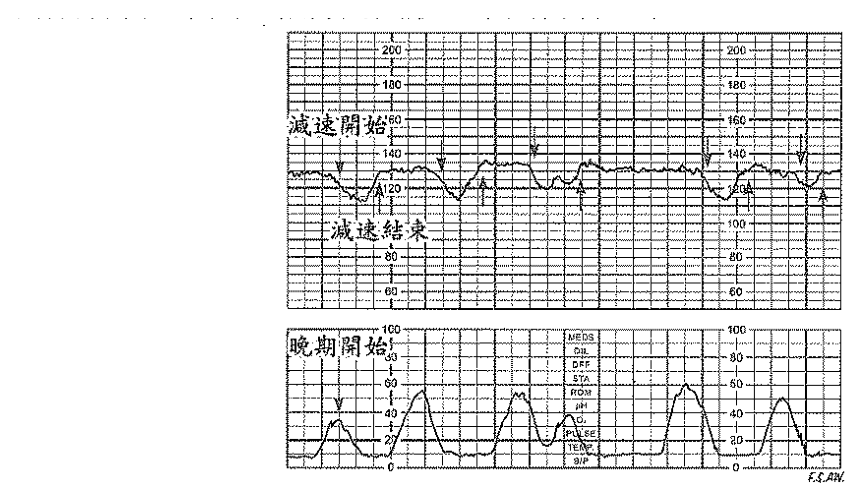

開卷有益 ／
護理師 ／ 產兒科護理學 ／ 108 年第 2 次108 年第 2 次護理師產兒科護理學試題與答案
這一頁是民國 108 年第 2 次護理師產兒科護理學的整份歷屆試題，共 80 題，題目與標準答案出自考選部「國家考試試題及測驗式試題答案」開放資料，其中 80 題附有詳解。以下逐題列出題幹、選項與答案；要計時作答或記錄成績，請用線上練習。
考選部原始場次代碼：108110
線上作答這一科 →
全部 80 題
第 1 題
依據世界衛生組織及聯合國兒童基金會推行的政策，要成為母嬰親善醫院需符合下列那一項規定？
（A） 要求所有母親均需在產檯即開始哺餵母乳（B） 醫院實施每天 8 小時親子同室（C） 除非有醫療特殊需要，否則不給嬰兒母奶以外的食物，包括水、葡萄糖水或配方奶（D） 醫療人員可提供嬰兒人工奶嘴或安撫奶嘴，以緩解哺餵母親乳頭的負擔答案：（C）
詳解與考點 正解：題眼在「母嬰親善醫院」——母乳哺育支持的核心是在沒有醫療適應症時，避免以水、葡萄糖水或配方奶取代母乳，讓嬰兒能依需求有效吸吮並維持泌乳，故選 C。
A：支持早期肌膚接觸與開始哺乳，但不能以強制所有母親在產檯哺餵表述。
B：親子同室應以持續性的照護模式促進依需求哺餵，非每天僅 8 小時。
D：不應常規提供人工奶嘴或安撫奶嘴，以免干擾吸吮與建立哺乳。B 是最強誘答——親子同室方向正確，但時數不足以符合持續同室的原則。
本題考點：母嬰親善醫院（Baby-friendly Hospital Initiative）；純母乳哺餵（exclusive breastfeeding）；親子同室（rooming-in）。
第 2 題
下列那一種細菌或病毒感染，為罹患子宮頸癌的高危險群？
（A） 梅毒螺旋體（B） 奈瑟氏淋病雙球菌（C） 疱疹病毒（D） 人類乳突狀病毒 （HPV）答案：（D）
詳解與考點 正解：題眼在「子宮頸癌高危險群」——持續性感染高危險型人類乳突狀病毒與子宮頸癌發生有明確關聯，故選 D。
A：梅毒螺旋體造成梅毒，並非子宮頸癌的主要致癌病毒。
B：奈瑟氏淋病雙球菌造成淋病，雖須治療與追蹤，非子宮頸癌的主要高危險感染。
C：疱疹病毒可造成生殖器疱疹，但不是本題所問子宮頸癌最具代表性的致病因子。C 是最強誘答——它同樣是常見性傳染病毒，卻沒有 HPV 與子宮頸癌那樣的核心因果關聯。
本題考點：人類乳突狀病毒（human papillomavirus, HPV）；子宮頸癌（cervical cancer）；持續感染（persistent infection）。
第 3 題
李女士，G1P0，懷孕 25 週，請教護理師：「我身體上從肚臍到會陰部有一條褐色的線，這正常嗎？ 什麼時候會消失？」，護理師的回答，下列何者為宜？
（A） 這是懷孕期荷爾蒙變化造成皮膚色素沈著，約在生產後會逐漸變淡（B） 這是懷孕常見的妊娠紋，約在生產後 2～3 個月會消失（C） 有可能是胎兒異常的徵兆，建議進一步做染色體核型分析（D） 需儘快到整型外科或皮膚科進行去斑處理，否則容易留下永久的色素沈著答案：（A）
詳解與考點 正解：題眼在「肚臍到會陰部的褐色線」與「懷孕 25 週」——這是妊娠期荷爾蒙影響造成的腹中線色素沉著，產後隨荷爾蒙變化通常會逐漸變淡，故選 A。
B：妊娠紋是皮膚張力改變形成的條紋，與腹中線的色素沉著不同。
C：腹中線是常見生理變化，不能據此推論胎兒染色體異常。
D：孕期通常無須因腹中線急做去斑處理，衛教重點是說明其生理性與觀察。B 是最強誘答——兩者都會出現在腹部，但一者是色素沉著，另一者是皮膚結構拉伸。
本題考點：腹中線（linea nigra）；妊娠期色素沉著（pregnancy hyperpigmentation）；正常孕期生理變化（normal physiological changes of pregnancy）。
第 4 題
有關生產教育的觀念，下列何者正確？①由醫護團隊主導生產過程，減少孕婦生產壓力 ②讓孕婦 因應懷孕與分娩照護的過程 ③朝向以家庭為中心的照護 ④強調一定不要使用藥物性減痛方法
（A） ①②（B） ③④（C） ②③（D） ①④答案：（C）
詳解與考點 正解：判準是決策權該落在誰身上。②讓孕婦有能力因應懷孕與分娩的照護過程成立，生產教育的目的正是把知識與技巧交到孕婦手上，使她能參與並做出選擇；③朝向以家庭為中心的照護成立，將配偶與家人納入準備與陪伴，是現行產科照護的基本取向。①由醫護團隊主導生產過程恰好相反，它把孕婦放回被動接受的位置，減少的是參與而非壓力；④強調一定不要使用藥物性減痛方法則把單一方法絕對化，減痛方式應在說明利弊後由產婦依當下狀況選擇，故選 C。
A：（①②）賦能的敘述成立，①的主導權歸屬與生產教育的立論相反。
B：（③④）以家庭為中心成立，④的絕對化用語使整組不成立。這是最強誘答——非藥物減痛確實是生產教育的重要內容，分辨關鍵在於「一定不要」把提供選項變成了剝奪選項。
D：（①④）兩項都把決定權從產婦身上移開，一個交給醫護團隊，一個交給預設立場。
本題考點：生產教育（childbirth education）的當代取向——以家庭為中心的照護（family-centered care）、孕產婦的賦能與知情選擇；提供多元減痛選項並尊重產婦決定，而非由醫護主導流程或預設單一方法。
第 5 題
有關運用廓清式呼吸之敘述，下列何者錯誤？
（A） 分娩期間每次宮縮開始與結束都應做一次廓清式呼吸（B） 可做為產婦肺部通氣及放鬆的訊號（C） 呼吸速率為正常呼吸速率的 2 倍（約每分鐘 24～32 次）（D） 呼吸法的運用須依產婦的需要及放鬆程度來進行調整答案：（C）
詳解與考點 正解：題眼在「廓清式呼吸」與「錯誤」——廓清式呼吸是每次宮縮前後用較深、較慢的呼吸作為開始與結束訊號，目的在換氣與放鬆，不是將呼吸速率提高到正常的 2 倍，故 C 為應選項。
A：在宮縮開始與結束做廓清式呼吸，可協助轉換與放鬆，正確。
B：此法可作為肺部通氣及放鬆訊號，正確。
D：呼吸技巧需隨產婦需要與放鬆程度調整，正確。C 是最強誘答——呼吸技巧確實要調整節律，但過快呼吸可能引發過度換氣與不適。
本題考點：廓清式呼吸（cleansing breath）；分娩呼吸法（labor breathing）；過度換氣（hyperventilation）。
第 6 題
羊水指數（AFI）是以超音波觀察羊水量，有關判定之標準，下列何者正確？①小於 10 cm 為羊水過 少 ②大於 2000 mL 為羊水過多 ③28 週可達 1000 mL ④約 36 週羊水增加至最高點
（A） ①②（B） ③④（C） ①③（D） ②④答案：（D）
詳解與考點 正解：本題把兩套不同單位的判準混在一起，需分開處理。②大於 2000 mL 為羊水過多成立，這是以絕對容積表示的傳統判準；④約 36 週羊水量增加至最高點成立，此後羊水逐漸減少，過期妊娠常見的羊水過少即由此而來。①的門檻寫得太寬——羊水指數是四個象限最大垂直液深的總和，判定羊水過少的界線明顯低於 10 cm；③則把時間點提早了，妊娠中期羊水量仍在累積，達到約 1000 mL 是接近足月前的事（各家指引的切點略有出入，此處只取相對關係），故選 D。
A：（①②）容積判準成立，①的公分門檻過寬，會把羊水量正常偏低者一併判為過少。
B：（③④）高峰時間成立，③的週數與容積對應不上。這是最強誘答——③與④講的是同一條羊水量隨孕期變化的曲線，分辨關鍵在於曲線的高峰落在接近足月處，28 週仍在上升段。
C：（①③）兩項的數值都不成立。
本題考點：羊水量評估的兩套指標——羊水指數（amniotic fluid index, AFI）以公分計、絕對容積以毫升計，兩者的門檻不可互換套用；羊水量隨孕期先升後降、於接近足月時達高峰，是判讀羊水過多與過少的時間背景。
第 7 題
吳女士，育有一子，目前懷孕 10 週，她曾自然流產一次，也曾因懷孕 24 週胎死腹中而引產。其生 產紀錄史，下列何者正確？
（A） G4P3AA1（B） G3P3SA1（C） G4P2SA1（D） G3P2SA1答案：（C）
詳解與考點 正解：題眼在現孕、1 次足月生產、1 次自然流產與 1 次妊娠 24 週胎死腹中引產——先算 G：現孕加既往 3 次懷孕，為 G4；再算 P：曾生產與 24 週引產皆計入胎次，為 P2；自然流產為 A1，故選 C。
A：G4 正確，但 P3 把自然流產也計入生產胎次；且流產記為 AA1（人工流產），本例為自然流產應寫 SA1，兩處皆錯。
B：G3 漏算目前懷孕，且 P3 過多。
D：G3 同樣漏算目前懷孕。A 是最強誘答——它主要錯在將未達可存活週數的自然流產誤加進 P 值。
本題考點：孕產史（gravida and para）；妊娠次數（gravida, G）；生產胎次與流產數（para and abortion, P/A）。
第 8 題
下列何種方式是依據懷孕婦女子宮底高度位置推估預產期？
（A） 最後一次月經週期（LMP）（B） 內格萊式法則（Nagel's rule）（C） 麥當勞法則（McDonald’s rule）（D） 雙頂徑（BPD）答案：（C）
詳解與考點 正解：題眼在「子宮底高度位置」——麥當勞法則以恥骨聯合至子宮底的長度推估妊娠週數，進而協助推估預產期，故選 C。
A：最後一次月經是推估孕期的重要資料，但不是以子宮底高度推估的方法。
B：內格萊式法則依最後一次月經日期推算預產期，非量測子宮底。
D：雙頂徑是超音波胎兒測量指標，不是子宮底高度法。B 是最強誘答——它也用來估算預產期，但計算依據是月經日期而不是腹部量測。
本題考點：麥當勞法則（McDonald’s rule）；子宮底高度（fundal height）；預產期推估（estimated date of delivery）。
第 9 題
懷孕 11 週的黃女士向護理師抱怨有頻尿的現象，可是並無解尿困難的情形，下列何者是較適當的護 理指導？
（A） 白天的飲水量應該減少（B） 仍維持每日適當的飲水量（C） 要求黃女士馬上接受醫生的問診（D） 要求黃女士慢慢練習自我控制膀胱，然後將兩次排尿的時間儘量拉長答案：（B）
詳解與考點 正解：題眼在「懷孕 11 週、頻尿、無解尿困難」——早孕期子宮位置與荷爾蒙變化可使膀胱受壓而頻尿；既無排尿疼痛或困難等感染警訊，應維持每日適當飲水量，故選 B。
A：白天刻意減少飲水可能使尿液濃縮、增加不適與泌尿道感染風險。
C：單純頻尿且無警訊時可先給予正常生理變化衛教，不需要求立即問診。
D：強行延長排尿間隔會增加膀胱不適與尿液滯留，不是適當作法。A 是最強誘答——減少飲水似乎能減少頻尿，卻犧牲了孕期水分需求與泌尿道健康。
本題考點：早孕期頻尿（urinary frequency in early pregnancy）；泌尿道感染警訊（urinary tract infection warning signs）；孕期水分攝取（hydration in pregnancy）。
第 10 題
李女士在第一產程中破水，下列何者為最優先的措施？
（A） 給予陰道內診（B） 評估胎心音 1 分鐘（C） 給予腹部觸診（D） 以石蕊試紙測試羊水答案：（B）
詳解與考點 正解：題眼在「第一產程破水」與「最優先」——破水後可能發生臍帶脫垂或臍帶受壓，須先以胎心音確認胎兒是否因灌流受影響；這屬生命安全與生理需求優先，故選 B。
A：陰道內診可評估產程，但破水後會增加感染風險，且不應排在胎心音之前。
C：腹部觸診能了解宮縮與胎位，卻不能最快辨識胎兒急性缺氧。
D：石蕊試紙可協助辨識羊水，但已知破水時不比胎心音優先。A 是最強誘答——內診看似能立刻掌握產程，錯在先後順序，破水當下要先確認胎兒安全。
本題考點：破水（rupture of membranes）；胎心音評估（fetal heart rate assessment）；臍帶脫垂（umbilical cord prolapse）。
第 11 題
王女士待產時，胎心率之變異性為 6～10 bpm，下列敘述何者正確？
（A） 胎兒感染（B） 胎兒缺氧（C） 胎兒瀕死（D） 胎兒正常答案：（D）
詳解與考點 正解：題眼在「胎心率變異性 6～10 bpm」——此數值落在中度變異性的範圍，代表胎兒自主神經系統反應存在，通常是令人安心的胎兒監測表現，故選 D。
A：感染不能僅憑此變異性判定，通常須合併體溫、基線心率與其他臨床資料。
B：胎兒缺氧常使變異性減少或消失，不能以中度變異性直接判定。
C：瀕死胎兒常見極低或缺乏變異性等嚴重異常徵象，與本題不符。B 是最強誘答——考生常把任何胎心監測數字都視為缺氧訊號，但判讀重點是變異性是否保留。
本題考點：胎心率變異性（fetal heart rate variability）；中度變異性（moderate variability）；胎兒氧合（fetal oxygenation）。
第 12 題
陳女士，G1P0，因規則陣痛而入產房待產，胎位為 ROA，子宮頸口開 1 cm，station=0，下列何者為 station 0？
（A） 胎兒的胎頭在骨盆入口上方（B） 胎兒的雙頂徑通過骨盆入口（C） 胎兒的雙頂徑通過恥骨聯合（D） 胎兒的胎頭接近骨盆出口答案：（B）
詳解與考點 正解：題眼在「station=0」——下降程度以胎頭先露部相對坐骨棘的位置判定。station 0 表示胎頭雙頂徑已通過骨盆入口，先露部與坐骨棘同高；尚未接近骨盆出口，故選 B。
A：胎頭在骨盆入口上方表示尚未銜接，下降程度應為負值，非 station 0。
C：恥骨聯合不是 station 的基準點；評估基準是骨盆內的坐骨棘，故非答案。
D：胎頭接近骨盆出口代表已在坐骨棘以下、下降更深，非 station 0。這是最強誘答——它把「已銜接」誤當成「已接近娩出」，分辨關鍵在於 station 0 只表示到達坐骨棘平面。
本題考點：胎頭下降程度（fetal station）以坐骨棘為 0 點；銜接（engagement）指雙頂徑通過骨盆入口；骨盆出口代表更後段的下降。
第 13 題
承上題，陳女士裝上胎兒監視器，此時胎兒心跳轉送器放置何處，可聽到最清楚胎心音？
（A） 肚臍上 1 cm 處（B） 與肚臍平行右側 3 cm 處（C） 肚臍與右髂骨前上棘連線中點（D） 肚臍與恥骨聯合連線中點答案：（C）
詳解與考點 正解：題眼在承上題的「ROA」胎位——枕骨在母體右前方時，胎兒背部位於母腹右側且偏前，胎心音應在最接近背部處聽取。胎兒已銜接，最清楚位置在肚臍與右髂骨前上棘連線中點，故選 C。
A：肚臍上方較接近胎兒小肢體或較高的身體部位，非本胎位背部的最佳聽診點。
B：右側雖符合 ROA 的左右方向，但與肚臍同高較偏上；胎兒頭部已下降時，背部聽診點通常更偏下。這是最強誘答——方向正確卻忽略胎頭下降造成的高低位置差。
D：肚臍至恥骨聯合中點位於正中下腹，較符合背部居中或其他胎位的可能位置，非 ROA 的右前側。
本題考點：胎心音最清楚處（fetal heart sound auscultation）在胎背；枕前位（occiput anterior）多在肚臍以下聽取；胎位的左右與前後方向共同決定探頭位置。
第 14 題
照顧處於過渡期之待產婦，下列何者為最適當的護理措施？
（A） 減少探視次數（B） 延長衛教時間（C） 告知產程進展（D） 增加環境刺激答案：（C）
詳解與考點 正解：題眼在「過渡期」——第一產程末段的待產婦常疼痛劇烈、焦慮且注意力短暫，最適切的是提供簡短、即時且可掌握的資訊。告知（C）產程進展能降低未知感、協助配合當下處置，故選 C。
A：探視安排應依產婦需求、隱私與單位規範調整，單純減少次數不能直接處理過渡期的焦慮與不確定感。這是最強誘答——它看起來對，是因為過渡期確實要減少環境刺激；但探視次數屬環境安排，回應不了產婦此刻對產程進展的不確定感。
B：過渡期的專注與理解能力下降，不宜延長衛教；應使用短句、具體指令。
D：增加環境刺激會加重疲憊與焦慮，與減少干擾、支持專注的護理原則相反。
本題考點：過渡期（transition phase）重點是簡短支持與即時回饋；分娩支持（labor support）需配合產婦當下專注力；護理溝通以減少焦慮與環境刺激為原則。
第 15 題
有關分娩時經產婦的子宮頸變化之敘述，下列何者正確？
（A） 子宮頸變薄與擴張同時進行（B） 子宮頸先擴張，再變薄（C） 子宮頸先變薄，再擴張（D） 潛伏期時，子宮頸變薄變短程度為 90～100%答案：（A）
詳解與考點 正解：題眼在「經產婦」——曾經陰道生產者的子宮頸組織較有伸展性，變薄與擴張通常會相互重疊、同時進行，故選 A。
B：子宮頸變化不是先完全擴張才開始變薄；此順序與產程中的組織重塑不符。
C：先變薄、後擴張較常用來描述初產婦較明顯的模式，不能套用於經產婦。這是最強誘答——它記住了產程常見順序，卻忽略題幹限定的是經產婦。
D：潛伏期尚在產程早段，不能以接近完全變薄描述；高度變薄通常是更後期的進展。
本題考點：子宮頸變薄（effacement）與擴張（dilatation）；經產婦常呈同步變化；初、經產婦的產程型態是判讀題幹的重要切面。
第 16 題
吳女士 G2P1，她希望生產時能免除會陰切開術，以維持會陰的完整性，有關第二產程的護理措施， 下列何者錯誤？
（A） 溫和觸壓按摩會陰（B） 鼓勵產婦溫和向下用力推進（C） 配合產婦用力衝動向下推擠（D） 平躺使用腳凳盡力伸展腿部答案：（D）
詳解與考點 正解：題眼在「維持會陰完整性」與「何者錯誤」——第二產程應讓產婦採能放鬆會陰、有效用力且避免不必要壓迫的姿勢。（D）平躺使用腳凳並盡力伸展腿部易造成會陰緊繃與不適，不能作為保護會陰的原則，故為應選項。
A：於胎頭娩出前溫和觸壓、按摩會陰，可配合控制胎頭娩出速度並支持會陰組織，故非答案。
B：鼓勵溫和、配合宮縮的向下用力，有助逐步娩出並避免猛烈衝出，故非答案。
C：尊重產婦自然用力衝動、在適當時機指導用力，是第二產程支持的一環。這是最強誘答——「推擠」看似會增加撕裂風險，但關鍵是配合用力衝動而非強迫持續用力。
本題考點：第二產程（second stage of labor）支持自然用力；會陰保護（perineal protection）重在姿勢、支持與控制娩出速度；避免造成會陰過度張力的擺位。
第 17 題
有關基礎體溫的敘述，下列何者正確？
（A） 危險期是排卵前 3 天及排卵後 2 天（B） 依據排卵時體溫上升的原理，以確認危險期（C） 排卵時體溫上升（高於 36.7℃為高溫期）（D） 排卵後體溫下降（約 36.2℃為低溫期）答案：（A）
詳解與考點 正解：題眼在「基礎體溫」與「危險期」——此法以排卵前後的受孕可能性規劃避孕；題目所列的危險期為排卵前 3 天及排卵後 2 天，故選 A。
B：體溫上升通常反映排卵後的黃體素作用，僅靠升溫才確認時，可能已接近或越過易受孕時段，不能作為單獨確認危險期的依據。
C：排卵相關判讀看同一人連續量測後的相對上升，不以單一固定溫度作為高溫期標準。這是最強誘答——數值看似精確，錯在基礎體溫需看個人基線與連續趨勢。
D：排卵後受黃體素影響體溫趨於上升，不是下降。
本題考點：基礎體溫法（basal body temperature method）須連續同條件量測；排卵後黃體素（progesterone）使體溫上升；自然避孕法需結合個人週期趨勢判讀。
第 18 題
下列何者為子宮復舊不全的現象？
（A） 產後 18 天在腹部觸摸到子宮底（B） 產後子宮底每天約下降 1～2 cm（C） 產後 1 週子宮重量下降至 500 公克（D） 產後第 1 天子宮底高度臍平答案：（A）
詳解與考點 正解：題眼在「子宮復舊不全」——產後子宮應逐日縮小並下降，若產後 18 天仍能由腹部觸及子宮底，表示復舊進度明顯延遲，故選 A。
B：子宮底逐日下降是正常復舊的趨勢，故非答案。
C：產後第一週子宮重量下降屬正常生理性縮小的描述，故非答案。
D：產後早期子宮底位於臍部附近是常見變化，單獨出現不表示復舊不全。這是最強誘答——它有明確時間與高度，卻仍在產後早期正常變化的範圍。
本題考點：子宮復舊（uterine involution）以子宮底下降與體積縮小評估；子宮復舊不全（subinvolution）表現為子宮仍偏大、偏高；需同時留意感染、出血與膀胱膨脹等影響因素。
第 19 題
有關剖腹產術後照護之敘述，下列何者錯誤？
（A） 平躺時可將頭側一邊，避免分泌物阻塞呼吸道（B） 產後 1 小時內每隔 15 分鐘測量生命徵象（C） 術後導尿管須留置至少 8 小時（D） 等產婦可下床活動時，再哺餵母乳答案：（D）
詳解與考點 正解：題眼在「剖腹產術後」與「何者錯誤」——母嬰接觸與哺乳應在產婦及新生兒狀況穩定、可安全協助時儘早開始，不必等到產婦能下床活動。（D）延後至可下床才哺餵，會無必要地錯失早期支持，故為應選項。
A：麻醉恢復早期採頭偏一側可降低分泌物滯留造成呼吸道阻塞的風險，故非答案。
B：術後初期密集測量生命徵象有助及早發現出血、循環或麻醉相關異常，故非答案。
C：導尿管留置時間須依手術、麻醉與排尿恢復評估；術後短暫留置可監測尿量並避免過早下床排尿負擔，故非答案。這是最強誘答——它看起來像錯的，是因為時數寫得很死；但剖腹產後短暫留置導尿管監測尿量屬常規作法，與「等能下床才哺乳」這種無醫療理由的延後不同。
本題考點：剖腹產術後照護（post-cesarean care）先維持呼吸循環安全；早期觀察（early postoperative monitoring）重視出血與生命徵象；母乳哺餵（breastfeeding）可在安全協助下及早開始。
第 20 題
有關產後生理變化的敘述，下列何者正確？
（A） 產後 24 小時內體溫會輕微下降，是因為生產過度用力、脫水的關係（B） 產後 12～24 小時內，排尿量增加為正常現象，是為了排除懷孕時滯留多餘的水份（C） 因為凝血因子增加，可利用霍曼氏試驗評估下肢血栓動脈炎（D） 產後心輸出量增加，脈搏會增加到 80～120 次／分答案：（B）
詳解與考點 正解：題眼在「產後 12～24 小時」與「排尿量增加」——產後血液循環重新分配，妊娠期間滯留的多餘水分會經腎臟排出，出現利尿是正常生理變化，故選 B。
A：生產用力與脫水較可能使體溫短暫輕微上升，不是以體溫下降來解釋。
C：霍曼氏試驗是傳統的深層靜脈血栓評估動作，並非評估「血栓動脈炎」，且不能單獨作為診斷依據。
D：產後脈搏常因循環調整而較緩，不能把心輸出量增加直接推成脈搏必升至所列區間。這是最強誘答——它把兩個循環概念直接相等，但心輸出量還受每搏量影響。
本題考點：產後利尿（postpartum diuresis）有助排除妊娠期多餘水分；產後循環調整（postpartum hemodynamic change）須分別判讀脈搏與心輸出量；深層靜脈血栓（deep vein thrombosis）需以整體臨床評估確認。
第 21 題
劉女士 G2P2，陰道生產，產後第 2 天主訴：「我的子宮收縮怎麼這麼痛」，下列何者錯誤？
（A） 經產婦的肌肉張力較鬆弛，故疼痛感更明顯（B） 這是因為子宮收縮造成的正常現象（C） 建議熱敷或輕撫按摩緩解疼痛（D） 此現象稱為產後痛，約持續 7 天就會減輕答案：（D）
詳解與考點 正解：題眼在「經產婦、產後第 2 天」與「何者錯誤」——產後痛是子宮為復舊而收縮所致，經產婦常較明顯，但通常在產後早期逐漸緩解。（D）稱其約持續 7 天才減輕，與一般產後痛的短暫性不符，故為應選項。
A：經產婦子宮肌肉張力較鬆弛，復舊收縮可能較強，因而較易感到產後痛，故非答案。這是最強誘答——它看起來可疑，是因為「鬆弛」直覺上該比較不痛；實際上張力低使子宮需間歇強力收縮才能復舊，痛感反而更明顯。
B：子宮收縮可壓迫血管、減少出血並促進復舊，是產後痛的主要機轉，故非答案。
C：在評估出血與感染等異常後，熱敷或輕撫按摩可作為非藥物舒緩方式，故非答案。
本題考點：產後痛（afterpains）源於子宮收縮；子宮復舊（uterine involution）兼具止血與恢復孕前大小的作用；疼痛處理須先排除產後出血與感染等異常。
第 22 題
有關母嬰親善醫院的 10 項措施，下列何者可直接促進親子依附關係？
（A） 生產後於產檯立即性肌膚接觸（B） 除非醫療需求，不提供配方奶（C） 不使用奶瓶奶嘴餵食（D） 提供產婦母乳支持團體答案：（A）
詳解與考點 正解：題眼在「直接促進親子依附」——生產後立即肌膚接觸讓母親與新生兒有即時的觸覺、視覺與互動經驗，最直接建立早期親子連結，故選 A。
B：除醫療需要外不主動提供配方奶主要是支持純母乳哺餵，對依附有間接益處，但不是最直接的互動措施。
C：避免奶瓶與奶嘴可減少乳頭混淆並支持吸吮練習，重點在哺乳成功，非直接的親子依附。
D：母乳支持團體提供持續的社會支持，主要作用在提升哺乳信心與延續性。這是最強誘答——它確實能改善母親的支持系統，但題幹問的是母嬰之間「直接」的連結。
本題考點：早期肌膚接觸（skin-to-skin contact）可促進親子依附（parent-infant attachment）；母嬰同室與支持哺乳是母嬰親善措施；選項比較須區分直接互動與間接支持。
第 23 題
有關霍曼氏試驗（Homan's test）之敘述，下列何者錯誤？
（A） 須讓個案的腳板向背側彎曲（B） 在縮短腓腸肌以壓迫深部靜脈（C） 主要測試是否有深層靜脈血栓（D） 陽性反應為發生疼痛反應答案：（B）
詳解與考點 正解：題眼在「霍曼氏試驗」與「何者錯誤」——傳統操作是使足部背屈，若腓腸肌區疼痛為陽性徵象；背屈是拉長而非縮短腓腸肌。（B）稱其縮短腓腸肌以壓迫深部靜脈，動作機轉相反，故為應選項。
A：使腳板向背側彎曲即足背屈，是此傳統檢查的操作動作，故非答案。
C：此試驗歷來用於觀察深層靜脈血栓的可疑徵象，故非答案。
D：背屈引發小腿疼痛被視為陽性反應，故非答案。這是最強誘答——它描述正確的傳統定義，但現行實務不以霍曼氏試驗單獨診斷深層靜脈血栓，仍須整合症狀與檢查。
本題考點：霍曼氏試驗（Homan’s test）為足背屈觀察疼痛的傳統徵象；腓腸肌（gastrocnemius）在背屈時被拉長；深層靜脈血栓（deep vein thrombosis）需以整體臨床評估確認。
第 24 題
新生兒出生後進行口鼻抽吸之目的為何？
（A） 刺激迷走神經（B） 移除呼吸道分泌物（C） 引發嘔吐反射（D） 適度移除二氧化碳答案：（B）
詳解與考點 正解：題眼在「出生後口鼻抽吸」——抽吸的目的在於清除妨礙氣流的口鼻與上呼吸道分泌物，使呼吸道維持通暢，故選 B。
A：刺激迷走神經不是抽吸目的；過度或不當抽吸反而可能引發迷走神經反射，故非答案。
C：引發嘔吐反射不利於新生兒呼吸道安全，並非護理目標。
D：二氧化碳由肺泡通氣排出，口鼻抽吸不能直接移除體內二氧化碳。這是最強誘答——它把「清除呼吸道」誤解為「排出呼吸氣體」，兩者的生理機轉不同。
本題考點：新生兒呼吸道通暢（airway patency）優先於其他處置；抽吸（suctioning）清除可見或阻塞性的分泌物；二氧化碳排除（carbon dioxide elimination）依賴有效肺泡通氣。
第 25 題
有關新生兒囟門的敘述，下列何者正確？①前囟門為菱形，由二塊額骨及二塊頂骨組成 ②後囟門 為三角形，約出生後 18 週關閉 ③囟門若凹陷代表有脫水現象 ④胎頭之塑形現象（molding）， 1 個月後即可恢復
（A） ①②（B） ③④（C） ②④（D） ①③答案：（D）
詳解與考點 正解：四個子敘述分別涵蓋囟門的形狀與組成、關閉時序，以及臨床意義。①前囟門為菱形、由二塊額骨與二塊頂骨交會而成，成立；③囟門凹陷代表脫水成立，囟門張力反映顱內容量狀態，凹陷提示體液不足，飽滿或膨出則提示顱內壓上升。②與④都把時間拉得太長——後囟門形狀為三角形沒錯，但它在出生後數週內即關閉，遠早於 18 週；胎頭塑形是產程中顱骨互相重疊造成的暫時性變形，出生後數天內即自行恢復，不需一個月（各家教科書的時序略有出入，此處取其量級），故選 D。
A：（①②）形狀與組成骨成立，②的關閉時間高估了數倍。這是最強誘答——②的三角形描述本身正確，分辨關鍵在後半的時間：前後囟門的關閉時序差距近一年，後囟門以週計、前囟門以月計。
B：（③④）脫水的判讀成立，④把塑形恢復的時程拉長，會導致不必要的追蹤與家屬焦慮。
C：（②④）兩項的時序都不成立，整組建立在被拉長的關閉與恢復時間上。
本題考點：新生兒囟門（fontanel）評估——前囟門呈菱形、由額骨與頂骨交會，關閉時程以月計；後囟門呈三角形，關閉時程以週計；囟門張力作為脫水與顱內壓變化的臨床指標；胎頭塑形（molding）屬產程中的暫時性變形，出生後短期內自行恢復。
第 26 題
出生第 3 天的新生兒，出現早發性母乳黃疸，產婦擔心是否可以繼續哺餵母乳，下列護理師的回答 何者適當？
（A） 應該繼續哺餵母乳（B） 暫停哺餵母乳（C） 減少哺餵母乳次數（D） 暫停由口進食答案：（A）
詳解與考點 正解：題眼在「出生第 3 天」與「早發性母乳黃疸」——早期黃疸常與攝取量不足、排便量少而膽紅素排出不足有關；有效且頻繁的哺乳有助增加攝取與排泄，因此應繼續哺餵母乳，故選 A。
B：無醫療指徵即暫停母乳會減少攝取，可能不利於膽紅素經腸道排出，故非答案。
C：減少哺餵次數同樣會降低液體與熱量攝取，與處理早期哺乳相關黃疸的方向相反。
D：暫停由口進食會使新生兒更缺乏攝取，非一般早發性母乳黃疸的處置。這是最強誘答——它看似能讓腸胃休息，實際上早期黃疸更需要評估吸吮與攝取是否足夠。
本題考點：早發性母乳黃疸（breastfeeding jaundice）常與攝取不足有關；有效哺乳（effective breastfeeding）可增加排便與膽紅素排出；新生兒黃疸（neonatal jaundice）仍須追蹤臨床狀況與檢驗結果。
第 27 題
有關新生兒的暗示行為之敘述，下列何者錯誤？
（A） 投入性暗示行為：注視著照護者，微笑，代表想和人互動（B） 脫離性暗示行為：手腳屈曲，臉轉向照顧者，表示想睡覺（C） 飢餓的暗示行為：把手放在嘴裡，哭泣，拱背（D） 吃飽的暗示行為：睡著，推開照顧者，吸吮動作減少答案：（B）
詳解與考點 正解：題眼在「暗示行為」與「何者錯誤」——脫離性暗示表示新生兒已受刺激過多或需要休息，常見轉頭避開、肢體伸展或煩躁等行為。（B）把臉轉向照顧者、手腳屈曲歸為脫離且表示想睡覺，與其互動取向及行為意義不符，故為應選項。
A：注視、微笑屬投入性暗示，表示願意與照護者互動，故非答案。
C：手放入口中、哭泣與拱背可見於飢餓或需要安撫時，應配合其他線索評估，故非答案。
D：吸吮減少、轉開或推開照護者可提示飽足或不欲再受刺激，故非答案。這是最強誘答——「睡著」容易讓人忽略其餘飽足線索，實際上判讀應看一組行為而非單一表現。
本題考點：新生兒暗示行為（newborn cues）分為投入與脫離訊號；飢餓線索（hunger cues）應及早回應；飽足線索（satiety cues）可避免強迫餵食。
第 28 題
護理師執行產後新生兒立即性護理時，發現劉小弟頭頂部有一局部軟組織腫脹，觸診組織鬆軟且外 緣界線不清楚，下列敘述何者正確？
（A） 是胎頭腫塊（產瘤），為骨膜與顱骨間的血液聚集（B） 是胎頭腫塊，為頭皮上軟組織水腫（C） 是頭血腫，會逐漸越過縫合線（D） 是頭血腫，通常於出生後 24～48 小時消失答案：（B）
詳解與考點 正解：題眼在「頭頂軟組織腫脹、鬆軟、界線不清」——這是受產道壓力造成的頭皮軟組織水腫，即胎頭腫塊（產瘤）；水腫位於頭皮層，邊界不受顱縫限制，故選 B。
A：骨膜與顱骨間的血液聚集是頭血腫的描述，不是胎頭腫塊。
C：頭血腫位於骨膜下，通常受骨縫限制而不會越過縫合線，故非答案。
D：頭血腫吸收較慢，不是出生後短時間內即消失；較快消退的是頭皮水腫。這是最強誘答——它正好把兩種腫脹的消退速度對調。
本題考點：胎頭腫塊（caput succedaneum）是頭皮軟組織水腫且可越過縫合線；頭血腫（cephalohematoma）是骨膜下出血且受縫合線限制；新生兒頭部評估（newborn head assessment）須辨別層次、邊界與消退趨勢。
第 29 題
有關 HELLP syndrome 的症狀與致病機轉之敘述，下列何者正確？
（A） 為妊娠子癇症，易在懷孕 20 週以前出現，主要症狀是因血小板增加與溶血所引發（B） 指溶血、肝功能指數上升、血小板下降的症候群（C） 是妊娠出血性疾病的一種，包含血液動力失衡、低紅血球症與胎盤功能下降（D） 致病機轉通常與孕婦對胎兒的 ABO 血型不合有關答案：（B）
詳解與考點 正解：題眼在「HELLP syndrome」——名稱即由 Hemolysis、Elevated Liver enzymes、Low Platelets 三項組成，意指溶血、肝功能指數上升與血小板下降，故選 B。
A：HELLP 與妊娠高血壓疾病相關，但不是以血小板增加為特徵；其核心反而是血小板下降。
C：此項未呈現 HELLP 的三個定義組成，也把它籠統稱作出血性疾病，故非答案。
D：ABO 血型不合主要關乎母胎血型免疫問題，不能解釋 HELLP 的微血管病變與肝臟、血小板異常。這是最強誘答——兩者都可能出現溶血字樣，但 HELLP 的判讀必須同時看肝酵素與血小板。
本題考點：HELLP syndrome＝溶血（hemolysis）、肝酵素上升（elevated liver enzymes）、血小板低下（low platelets）；妊娠高血壓疾病（hypertensive disorders of pregnancy）可合併 HELLP；需監測出血、肝臟與母胎狀況。
第 30 題
有關協助子宮復舊的產後運動，下列何者錯誤？
（A） 臀部運動（B） 抬腿運動（C） 膝胸臥式（D） 擴胸運動答案：（D）
詳解與考點 正解：題眼在「協助子宮復舊」與「何者錯誤」——能促進骨盆與腹部肌群收縮、改善骨盆腔血液循環或協助子宮位置恢復的運動，才直接對復舊有幫助。（D）擴胸運動主要訓練胸廓與呼吸肌群，不能直接協助子宮復舊，故為應選項。
A：臀部運動可訓練骨盆底與臀部周邊肌群，與產後骨盆區恢復有關，故非答案。
B：抬腿運動可促進下肢循環與活動恢復，並屬產後循序運動的一環，故非答案。
C：膝胸臥式可利用姿勢協助骨盆腔器官回復位置，故非答案。這是最強誘答——姿勢看似與運動不同，但題幹問的是協助復舊的產後活動，仍可納入。
本題考點：產後運動（postpartum exercise）須循序漸進；子宮復舊（uterine involution）受子宮收縮與骨盆腔恢復影響；胸廓運動（chest expansion exercise）主要目的不是子宮復舊。
第 31 題
張女士懷孕 39 週，入院待產中，產程進度情形為：子宮頸擴張 4 cm，變薄 40%，高度為 0，胎兒監 測器顯示如下圖。根據此圖形，下列何者正確？

（A） 胎頭受壓（B） 胎盤功能不良（C） 臍帶受壓（D） 正常情形答案：（B）
詳解與考點 正解：判讀胎兒監測器圖形的題眼不在題幹的產程數據，而在「減速的起點與最低點，相對於下方子宮收縮曲線落在哪個時間點」。圖中上半部是胎心率曲線、下半部是子宮收縮壓力曲線。標示「減速開始」的向下箭頭並未落在收縮曲線的起點，而是落在該次收縮的波峰附近；胎心率的最低點更在波峰之後才出現；標示「減速結束」的向上箭頭則落在收縮已回到基線之後，胎心率才緩慢爬回原來水準。這種「起點延遲、最低點延遲、回復也延遲」的落後鏡像圖形就是晚期減速，而且圖上每一次收縮之後都跟著一次形狀相近的減速，屬反覆出現。晚期減速的機轉是子宮收縮時子宮胎盤的血流灌注被壓低，胎盤的氣體交換儲備不足以撐過整次收縮，胎兒因而出現一過性缺氧，故此圖形反映的是（B）胎盤功能不良，正解為（B）。
A：胎頭受壓造成的是早期減速，特徵是與收縮完全同步——減速起點對齊收縮起點、最低點對齊收縮波峰、收縮結束時胎心率已回到基線，圖形像收縮曲線的鏡像而沒有落後。圖中箭頭標示的減速起點落在波峰附近、回復又晚於收縮結束，時相對不上早期減速的定義，故非答案。
C：臍帶受壓造成的是變異性減速，圖形上會看到陡降陡升的 V 形或 U 形，下降幅度與出現時機和收縮沒有固定關係，有時與收縮無關時也會出現。圖中的減速下降平緩、各次形狀彼此相似，且每一次都固定跟隨一次收縮，不符變異性減速的樣態，故非答案。
D：圖中胎心率基線落在 120 至 140 bpm 之間，這一項確實在正常範圍，這也是本題最強的誘答——方向對但只看對了一半，基線正常不等於圖形正常。判讀須把基線、變異性、加速、減速四項合看，只要出現反覆性晚期減速，即屬需要進一步處置的圖形，不能判為正常情形，故非答案。
本題考點：三種減速的鑑別靠「時相」而不是「深度」——早期減速與收縮同步，成因是胎頭受壓；晚期減速落後於收縮，成因是子宮胎盤灌注不足；變異性減速與收縮沒有固定關係且陡降陡升，成因是臍帶受壓。看圖的固定步驟是先在下方收縮曲線標出起點與波峰，再把上方減速的起點與最低點對過去：對得上就是早期，對不上而整體落後就是晚期。判定為反覆性晚期減速後，護理措施依三層優先序中的生命安全與生理需求層決定，先設法改善子宮胎盤灌注——協助左側臥、停止催產素輸注、依醫囑增加靜脈輸液與給氧，並持續監測胎心率變化及通知醫師，而不是先做生產衛教或情緒安撫。
第 32 題
承上題，護理師的處置下列何者不適當？
（A） 採左側臥（B） 調快點滴（C） 調增催產素（D） 面罩給氧答案：（C）
詳解與考點 正解：四個選項合起來就是子宮胎盤灌流不足時的宮內復甦措施清單，本題要挑出方向相反的那一項。張女士懷孕 39 週、子宮頸擴張 4 cm、變薄 40%、胎頭高度 0，仍在第一產程，此時胎兒監測圖形出現需要處置的變化，護理措施的共同目標是增加子宮胎盤血流與母體血氧、並移除造成灌流下降的原因。子宮收縮本身會壓迫子宮螺旋動脈而中斷絨毛間隙的血流，收縮愈強、間隔愈短，胎兒可恢復的時間就愈少；催產素（oxytocin）正是加強收縮頻率與強度的藥物，此時應停用或減量，調增等於把造成灌流不足的因素再放大，是四項中唯一不適當者，故選 C。
A：採左側臥可解除增大的子宮對下腔靜脈與腹主動脈的壓迫，母體回心血量與子宮血流隨之增加，是最先執行也最省時的一項，故非答案。
B：調快點滴以擴充母體循環血量、支撐血壓，血壓穩住之後子宮胎盤灌流才有改善的基礎，故非答案。這是最強誘答——它與調增催產素同樣是「把靜脈輸注速度往上調」的動作，分辨關鍵在於調整的對象是晶體溶液還是子宮收縮劑：前者增加灌流，後者減少灌流。
D：面罩給氧提高母體血氧濃度，經由胎盤提升胎兒可用的氧量，是灌流不足時的標準處置之一，故非答案。
本題考點：胎心率型態異常時的宮內復甦（intrauterine resuscitation）——改變體位（左側臥解除下腔靜脈壓迫）、擴充輸液、給氧、停用或減量子宮收縮劑四件事同向；催產素（oxytocin）增強收縮會縮短絨毛間隙再灌流的時間，是灌流不足時唯一該往下調的項目。
第 33 題
有關前置胎盤住院治療的護理措施，下列何者錯誤？
（A） 執行陰道檢查（B） 監測子宮收縮及胎心率（C） 觀察陰道出血狀況（D） 測量生命徵象答案：（A）
詳解與考點 正解：題眼在「前置胎盤住院治療」與「何者錯誤」——胎盤位於子宮下段或覆蓋子宮頸內口時，陰道檢查可能擾動胎盤附著處、誘發大量出血。（A）執行陰道檢查違反避免刺激出血的安全原則，故為應選項。
B：監測子宮收縮與胎心率可及早辨識早產徵象及胎兒狀況，故非答案。
C：觀察陰道出血的量、顏色與變化是評估母體失血風險的必要措施，故非答案。
D：測量生命徵象可及早發現出血造成的循環變化，故非答案。這是最強誘答——它是基本常規措施，但在此題正因出血風險更必須密切執行。
本題考點：前置胎盤（placenta previa）主要風險為無痛性陰道出血；出血安全（hemorrhage safety）優先於例行內診；母胎監測（maternal-fetal monitoring）包括出血、生命徵象、子宮收縮與胎心率。
第 34 題
下列何者不是用來判斷孕婦是否破水的方法？
（A） 黏液塞排出（B） 陰道窺鏡檢查（C） 石蕊試紙試驗（D） 羊齒試驗答案：（A）
詳解與考點 正解：題眼在「判斷孕婦是否破水」——判準是檢驗陰道內是否有羊水，而非判斷接近分娩的徵象。黏液塞是子宮頸分泌物，可能在產程前排出，不能證實胎膜已破裂；故選 A。
B：陰道窺鏡檢查可直接觀察陰道穹窿是否有液體積聚或自子宮頸流出，並利於採集檢體，是評估破水的方式，故非答案。
C：羊水通常呈鹼性，石蕊試紙試驗可協助辨識陰道液是否具有較偏鹼性的特性。這是最強誘答——它只是間接檢驗，仍可能受血液等物質干擾，但其目的確實是協助判斷羊水，故非答案。
D：羊齒試驗是將液體乾燥後觀察結晶型態，羊水可出現特徵性羊齒狀結晶，可作為破水的輔助判斷，故非答案。
本題考點：胎膜早期破裂評估（rupture of membranes assessment）須檢驗或觀察羊水；黏液塞（mucus plug）排出是子宮頸變化的徵象，不等同破水；羊齒試驗（ferning test）與酸鹼試驗可作為輔助。
第 35 題
子宮頸於產後多久可以恢復到幾乎完全閉合，且變得較厚？
（A） 產後 7 天（B） 產後 14 天（C） 產後 28 天（D） 產後 42 天答案：（A）
詳解與考點 正解：題眼是「產後」的子宮頸復舊（involution）時程。產後初期子宮頸仍較鬆軟、可容手指通過；約至產後 7 天已幾乎閉合並逐漸變厚，故選 A。
B：產後 14 天時復舊持續進行，但不是本題所問「幾乎完全閉合」的典型時間點，故非答案。
C：產後 28 天較接近其他生殖器官進一步恢復的階段；把整個產褥期的概念套到子宮頸閉合，是時程混淆，故非答案。
D：產後 42 天常被用於產後追蹤或產褥期結束的時間框架，並非子宮頸幾乎閉合的時間點。這是最強誘答——它看似是完整恢復所需的時間，但題幹問的是子宮頸的特定復舊變化，故非答案。
本題考點：產褥期（puerperium）的生殖器官復舊；子宮頸復舊（cervical involution）在產後早期即明顯閉合、變厚；各器官的復舊速度不可混用。
第 36 題
有關心臟病婦女妊娠期護理之敘述，下列何者錯誤？
（A） 每天應有至少 10 小時以上睡眠，以減少心臟負擔（B） 採左側臥姿勢休息（C） 孕期應告知避免服用 digitalis，以免致畸胎（D） 有上呼吸道感染應立即就醫，及早控制感染答案：（C）
詳解與考點 正解：題眼在「心臟病婦女妊娠期」與「何者錯誤」——判準是減輕心臟負荷並維持母胎安全。是否使用 digitalis 應依病人的心臟狀態由醫療團隊評估；不能一概以致畸為由要求孕期避免服用，任意停藥反而可能使心功能惡化，故 C 為應選項。
A：充足睡眠與休息可降低耗氧量及心臟負荷，是心臟病孕婦的重要生活照護原則，故非答案。
B：左側臥可減少增大的子宮壓迫大血管，有助靜脈回流與子宮胎盤灌流，故非答案。
D：上呼吸道感染可增加代謝與心肺負擔，及早就醫控制感染有助避免心臟代償失衡，故非答案。
本題考點：心臟病妊娠（pregnancy with heart disease）以降低心臟負荷與預防感染為原則；左側臥（left lateral position）有助循環；孕期藥物管理（medication management）不可自行停用，須個別化評估。
第 37 題
有關口服 metronidazole（flagyl）治療陰道滴蟲感染之護理指導，下列何者正確﹖
（A） 婦女先接受治療，無效後再請性伴侶一起治療（B） 可進行陰道清水沖洗以加強治療效果（C） 服藥期間，不可飲用酒精性飲料（D） 治療期間，應配合採用口服避孕藥答案：（C）
詳解與考點 正解：題眼在「口服 metronidazole 治療陰道滴蟲感染」——此藥與酒精併用可能引發明顯不適反應，因此治療期間應避免酒精性飲料，故選 C。
A：滴蟲感染可經性接觸傳播，性伴侶應同時接受評估與治療，以免交互感染；不能等婦女治療無效才處理，故非答案。
B：陰道灌洗會改變正常菌叢與局部環境，不能作為加強口服治療的常規方法，故非答案。
D：口服避孕藥不是治療滴蟲感染的必要配合措施，也不能取代伴侶共同治療與安全性行為的指導。這是最強誘答——避孕與性健康相關，但它處理的是避孕而非消除感染，故非答案。
本題考點：甲硝唑（metronidazole）治療期間避免酒精；陰道滴蟲感染（trichomoniasis）須處理性伴侶以減少再感染；避免非必要陰道灌洗（vaginal douching）。
第 38 題
有關以子宮托（pessary）減輕子宮脫垂程度，其正確的放置部位為何？
（A） 陰道前穹窿（B） 陰道後穹窿（C） 子宮頸外口（D） 子宮頸內口答案：（B）
詳解與考點 正解：題眼在「子宮托減輕子宮脫垂」——判準是以陰道內的支撐面承托下垂子宮。子宮托置於陰道後穹窿可獲得穩定支撐，協助維持子宮位置，故選 B。
A：陰道前穹窿不是子宮托主要的承托定位處，無法提供題目所問的後方支撐，故非答案。
C：子宮頸外口是子宮頸的開口，並非子宮托應直接放置的部位；直接以開口為目標可能造成刺激，故非答案。
D：子宮頸內口位於子宮頸管內，不能作為陰道內子宮托的放置位置。這是最強誘答——名稱同樣含「子宮頸」，但子宮托是陰道內支撐器具，不置入子宮頸管，故非答案。
本題考點：子宮脫垂（uterine prolapse）的保守性處置；子宮托（pessary）以陰道內支撐減輕脫垂；陰道穹窿（vaginal fornix）的解剖定位。
第 39 題
有關精液檢查之護理指導，下列何者正確？
（A） 保險套直接收集精液送檢（B） 取精後以冰塊維持 7℃以下送檢（C） 取精後保溫 42℃送檢（D） 取精後室溫 1～2 小時內送檢答案：（D）
詳解與考點 正解：題眼在「精液檢查」——檢體必須避免極端溫度、污染與延遲，以維持精子活動性供判讀。取精後以接近室溫的狀態於 1～2 小時內送達檢驗室，故選 D。
A：一般保險套可能含殺精劑或其他化學物質，會影響精子存活與檢驗結果，不能直接用來收集檢體，故非答案。
B：冰塊低溫會抑制或傷害精子活動力，使檢體失去代表性，故非答案。
C：42℃高溫可能損害精子，不能以高溫保溫送檢。這是最強誘答——它看似是在模擬體溫，但溫度過高且檢體處理的要點是避免溫度劇烈變化與儘速送檢，故非答案。
本題考點：精液分析（semen analysis）的檢體品質控制；精子活動力（sperm motility）受溫度與送檢時間影響；採檢容器不可含殺精成分。
第 40 題
有關更年期婦女的脂質與脂蛋白改變，下列何者錯誤？
（A） 血小板凝集增加（B） 高密度脂蛋白（HDL）增加（C） 低密度脂蛋白（LDL）增加（D） 纖維蛋白原濃度增加答案：（B）
詳解與考點 正解：題眼在「更年期婦女」的脂質與脂蛋白改變，關鍵是雌激素保護作用下降後心血管風險上升。高密度脂蛋白是具保護性的脂蛋白，題目所述「HDL 增加」不符合此風險走向，故 B 為應選項。
A：更年期後血小板凝集傾向增加，會使血栓形成風險上升，故非答案。
C：低密度脂蛋白增加有助於解釋動脈粥樣硬化風險提高，是符合題意的改變，故非答案。
D：纖維蛋白原濃度增加會提高凝血傾向，與更年期後心血管風險增加的方向一致。這是最強誘答——它不像脂蛋白那樣直觀，但仍屬影響血栓風險的血液成分，故非答案。
本題考點：更年期（menopause）的心血管風險；高密度脂蛋白（HDL）具保護性；低密度脂蛋白（LDL）與纖維蛋白原（fibrinogen）增加會使動脈粥樣硬化或血栓風險上升。
第 41 題
有關青少年病人住院的護理，下列何者錯誤？
（A） 鼓勵青少年病人繼續與同儕保持聯絡（B） 以不批判的態度，接受青少年可能會有的退化性行為（C） 為維護其自我控制權，由他選擇服藥時間及意願，自行服藥（D） 討論各種自我照顧的方式，儘量減少依賴答案：（C）
詳解與考點 正解：題眼在「青少年病人住院」與「由他選擇服藥時間及意願，自行服藥」——判準是尊重自主性不能超過給藥安全。護理人員可讓青少年參與照護決策，但給藥仍須依醫囑、核對程序及病人能力執行，不能任由其決定是否服藥或自行給藥，故 C 為應選項。
A：同儕關係是青少年重要的社會發展需求，鼓勵以適當方式維持聯絡可減少住院隔離感，故非答案。
B：疾病與住院壓力下可能暫時出現較依賴的退化性行為，以不批判態度接納有助建立信任，故非答案。
D：討論自我照顧方式並逐步降低不必要依賴，可維持其控制感與能力發展，故非答案。
本題考點：青少年住院護理（adolescent hospitalization）重視自主與同儕關係；給藥安全（medication safety）須遵守醫囑與核對；支持自主不等於放棄專業監督。
第 42 題
護理師幫幼兒觸診頸部時，觸摸到淋巴結，下列對於觸摸到淋巴結特徵的描述，何者屬於異常現象？
（A） 直徑小於 1 cm（B） 界限不清楚（C） 指下可移動（D） 不會壓痛答案：（B）
詳解與考點 正解：題眼在「幼兒頸部淋巴結」與「異常現象」——評估重點是大小、邊界、活動度與壓痛。界限不清楚的淋巴結較可能與周圍組織沾黏或浸潤有關，屬需進一步評估的異常特徵，故選 B。
A：直徑小於 1 cm 的小型淋巴結可見於兒童，單獨存在不必然代表異常，故非答案。
C：指下可移動表示未固定於深部組織，通常較不具警訊，故非答案。
D：沒有壓痛的淋巴結不必然異常；是否異常仍須合併大小、硬度、邊界及病程判斷。這是最強誘答——壓痛常使人聯想到發炎，但「不壓痛」本身不足以定義異常，故非答案。
本題考點：淋巴結觸診（lymph node palpation）觀察大小、邊界、活動度與壓痛；固定或界限不清（fixed or ill-defined node）是警訊；兒童身體評估（pediatric physical assessment）須整合多項特徵。
第 43 題
依據常見的嬰幼兒發展現象，一般嬰幼兒乳齒的生長順序，下列何者正確？①上排中央門牙 ②下 排中央門牙 ③犬齒 ④第一臼齒 ⑤第二臼齒 ①
（A） ①→②→③→④→⑤（B） ①→②→④→⑤→③（C） ②→①→③→④→⑤（D） ②→①→④→③→⑤答案：（D）
詳解與考點 正解：題眼在「嬰幼兒乳齒的生長順序」與題幹列出的 ①至⑤。一般先長出下排中央門牙，再依序為上排中央門牙、第一臼齒、犬齒、第二臼齒；即②→①→④→③→⑤，故選 D。
A：①→②→③→④→⑤把上排中央門牙排在下排之前，且把犬齒排在第一臼齒之前，與常見順序不符，故非答案。
B：①→②→④→⑤→③除起始順序不符外，也把第二臼齒排在犬齒之前，故非答案。
C：②→①→③→④→⑤前兩項雖正確，但把犬齒排在第一臼齒之前。這是最強誘答——它保留正確的起始順序，錯在中段兩種牙齒的先後，故非答案。
本題考點：乳齒萌發（primary tooth eruption）的常見順序；中央門牙（central incisors）通常先於其他乳齒；第一臼齒（first molars）早於犬齒（canines）。
第 44 題
小妮及小美為幼稚園的玩伴，坐在地板互借遊戲器材或玩具一起玩，她們此時的遊戲特徵為何？
（A） 競爭遊戲（B） 合作遊戲（C） 平行遊戲（D） 聯合遊戲答案：（D）
詳解與考點 正解：題眼在「互借遊戲器材或玩具一起玩」——兒童已有互動與共享材料，但題幹未描述共同分工或共同目標，屬聯合遊戲，故選 D。
A：競爭遊戲強調勝負或比較，題幹描述的是互借與一起玩，未呈現競賽目標，故非答案。
B：合作遊戲需要共同組織、分工並朝共同目標進行；本題僅有共享器材，尚未達此程度，故非答案。
C：平行遊戲是各自玩相似活動、彼此少有直接互動；題幹明示互借玩具，已超出平行遊戲。這是最強誘答——兩者都可發生在同一空間，但有無互相交換材料與互動才是分界，故非答案。
本題考點：聯合遊戲（associative play）具有互動與共享材料、未必共同組織；平行遊戲（parallel play）各自活動、互動有限；合作遊戲（cooperative play）有分工與共同目標。
第 45 題
小明，1 歲，罹患主動脈狹窄症（coarctation of the aorta）而入院，下列何者不是其症狀？
（A） 上肢血壓比下肢高（B） 肺血管阻力升高而有發紺現象（C） 常主訴頭痛、暈眩（D） 股動脈搏動較弱，甚至摸不到答案：（B）
詳解與考點 正解：題眼在「主動脈狹窄」與「不是其症狀」——主動脈狹窄使狹窄處近端壓力較高、遠端灌流較差，典型表現集中於上、下肢循環差異。肺血管阻力升高與發紺不是未合併其他畸形時的典型症狀，故 B 為應選項。
A：狹窄近端的上肢血壓可高於遠端下肢，是主動脈狹窄的重要線索，故非答案。
C：上半身血壓偏高可能引起頭痛、暈眩等不適，故非答案。
D：下肢灌流不足可使股動脈搏動減弱或難以觸及，是典型身體評估發現，故非答案。
本題考點：主動脈狹窄（coarctation of the aorta）造成近端高壓與遠端低灌流；上肢與下肢血壓及脈搏差異（upper-lower extremity discrepancy）是重要線索；發紺（cyanosis）非典型單純表現。
第 46 題
雯雯是法洛氏四重畸形（Tetralogy of Fallot’s）的病嬰，當其出現發紺嚴重時，護理師為其採膝胸臥 式姿勢，可使症狀改善的原理為何？
（A） 減少全身血管的阻力，提高血壓（B） 減少下肢回心血量，增加肺部血流（C） 減少上肢回心血量，增加腦部的血液供應（D） 減少血液循環全身的距離，提高全身循環血量答案：（B）
詳解與考點 正解：題眼在「法洛氏四重畸形」發紺加劇與「膝胸臥式」——判準是降低右向左分流、增加肺部血流。膝胸臥式使下肢屈曲、減少下肢靜脈回流，並有助提高全身血管阻力，讓較多血液流向肺部氧合，故選 B。
A：減少全身血管阻力會使右向左分流更容易發生，與改善發紺的機轉相反，故非答案。
C：姿勢處置的主要目的不是增加腦部血液供應，而是改善肺循環與氧合，故非答案。
D：血液循環距離不會因膝胸臥式而縮短，也不是改善缺氧的生理機轉。這是最強誘答——它看似以「提高循環血量」解釋改善，但真正關鍵是血流分配與分流減少，故非答案。
本題考點：法洛氏四重畸形（tetralogy of Fallot）的發紺發作；膝胸臥式（knee-chest position）有助提高全身血管阻力並減少右向左分流；肺血流（pulmonary blood flow）增加可改善氧合。
第 47 題
葳葳，5 歲，剛做完右心導管檢查，返回病房後護理師提供的護理措施，下列何者錯誤？
（A） 臥床 6 小時，清醒後即可進食（B） 評估檢查側之肢體循環，並與另一側比較（C） 砂袋加壓穿刺部位，彎曲肢體防止砂袋掉落（D） 觸診兩側肢體的脛骨後動脈或足背動脈，做對稱性比較答案：（C）
詳解與考點 正解：題眼在「右心導管檢查後」與「何者錯誤」——穿刺部位首要是預防出血並維持遠端循環，需避免彎曲穿刺側肢體。以砂袋加壓時應讓肢體維持伸直；彎曲肢體會增加出血或血腫風險，故 C 為應選項。
A：檢查後須依醫囑臥床觀察，清醒且吞嚥功能適當後可進食，是合理的恢復期照護，故非答案。
B：比較檢查側與對側肢體的皮膚顏色、溫度、脈搏與微血管再充填，可及早發現循環受損，故非答案。
D：觸診兩側脛骨後動脈或足背動脈並做對稱性比較，是評估下肢遠端灌流的正確方法。這是最強誘答——它只是在做「比較」而非單看一側，正是及早辨識血管併發症所需，故非答案。
本題考點：心導管檢查後照護（post-cardiac catheterization care）；穿刺側肢體須維持伸直（limb immobilization）以防出血；神經血管評估（neurovascular assessment）須與對側比較。
第 48 題
有關胰島素注射的敘述，下列何者錯誤？
（A） 應先抽取短效胰島素 RI 後，再抽取中效胰島素 NPH（B） 以 Z 字法做肌肉注射（C） 注射部位須輪換，以避免注射部位脂質增生，影響胰島素的吸收（D） 胰島素注射部位吸收速度由快而慢之排列順序為：腹部＞手臂＞大腿＞臀部答案：（B）
詳解與考點 正解：題眼在「胰島素注射」與「何者錯誤」——胰島素一般採皮下注射以形成可預期的吸收，Z 字法是肌肉注射減少藥液沿針道滲漏的技術，不能作為胰島素的常規注射方法，故 B 為應選項。
A：混合短效 RI 與中效 NPH 時先抽取短效胰島素，可避免 NPH 混入短效胰島素瓶內造成污染，故非答案。
C：規律輪換注射部位可降低脂質增生或萎縮，避免吸收速度變異，故非答案。
D：不同皮下注射部位吸收速度不同，腹部通常最快、臀部較慢，題列順序符合常用護理原則。這是最強誘答——它以器官部位排列，不容易憑直覺判斷；應以皮下血流與一致的輪換策略判讀，故非答案。
本題考點：胰島素皮下注射（subcutaneous insulin injection）；混合胰島素採清澈先、混濁後（clear before cloudy）；部位輪換（site rotation）可減少脂肪營養不良與吸收不穩。
第 49 題
小明，8 個月大，疑似患有胃食道逆流（gastroesophageal reflux, GER）接受多項診斷檢查，下列何者 正確？
（A） 食道鏡檢查，可以確認逆流量的多寡（B） 上腸胃道攝影術，需喝下含顯影劑的牛奶（C） 腹部超音波掃描，確認食道炎的位置（D） 24 小時食道酸鹼值測定，是最準確的診斷方法答案：（D）
詳解與考點 正解：題眼在「疑似胃食道逆流」與「最準確的診斷方法」——要直接反映食道酸暴露，24 小時食道酸鹼值測定可連續記錄逆流相關的酸鹼變化，故選 D。
A：食道鏡可評估食道黏膜是否有發炎或其他病灶，不能用來量化每次逆流量，故非答案。
B：上腸胃道攝影使用鋇劑觀察上消化道解剖與吞嚥動態，主要用途在排除幽門狹窄、腸旋轉不良等結構異常；它只能捕捉檢查當下的片段影像，無法量化一段時間內的酸暴露與逆流頻率，敏感度低，故不是最準確的診斷方法，B 非答案。
C：腹部超音波可評估部分腹部構造，不能確認食道炎的位置；食道黏膜病灶須以其他適切檢查評估，故非答案。
本題考點：胃食道逆流（gastroesophageal reflux）的診斷；24 小時食道酸鹼監測（24-hour esophageal pH monitoring）可評估酸暴露；內視鏡（endoscopy）主要觀察黏膜病變。
第 50 題
兒童接受排空性膀胱尿道攝影（voiding cystouretheography）的主要目的是：
（A） 了解尿路動力學（B） 了解泌尿道生理結構（C） 評估輸尿管逆流情形（D） 評估尿路結石情形答案：（C）
詳解與考點 正解：題眼在「排空性膀胱尿道攝影」——檢查是在膀胱充盈及排尿過程中以顯影觀察尿液是否逆流至輸尿管，主要用於評估輸尿管逆流情形，故選 C。
A：尿路動力學檢查著重壓力、容量與排尿功能，並非本攝影的主要目的，故非答案。
B：泌尿道生理結構可由多種影像檢查觀察；本檢查的特異重點在排尿動態與逆流，而非僅看結構，故非答案。
D：尿路結石通常以其他影像檢查評估，排空性膀胱尿道攝影不是以偵測結石為主要目的。這是最強誘答——它同樣是泌尿道影像，但「排空性」提示必須觀察排尿時是否逆流，故非答案。
本題考點：排空性膀胱尿道攝影（voiding cystourethrography）；膀胱輸尿管逆流（vesicoureteral reflux）的影像評估；尿路動力學（urodynamics）與結構影像檢查的目的不同。
第 51 題
病童罹患厭食症，於營養復健期間，因過度餵食、體重快速增加可能造成的問題，下列敘述何者正確？
（A） 心血管負擔過重（B） 無月經（C） 胃出血（D） 暴食症答案：（A）
詳解與考點 正解：題眼在「厭食症營養復健」與「過度餵食、體重快速增加」——長期營養不良後突然大量補充，可能造成體液與電解質調節失衡，使心臟承受額外負荷，故選 A。
B：無月經是厭食症及長期低體重可能出現的表現，但不是快速過度餵食造成的主要急性問題，故非答案。
C：胃出血不是營養復健過快的典型直接併發症，故非答案。
D：暴食症是另一種進食障礙的診斷特徵，不能作為快速營養補充的生理併發症。這是最強誘答——兩者都與飲食行為有關，但本題問的是復食後的急性身體負荷，而非疾病分類，故非答案。
本題考點：再餵食症候群（refeeding syndrome）的風險；嚴重營養不良者的營養復健（nutritional rehabilitation）須循序漸進；體液與電解質變動可增加心血管負荷（cardiovascular burden）。
第 52 題
常見的兒童虐待類型包括身體虐待、情緒（精神）虐待、性虐待及疏忽，有關兒童虐待的敘述，下 列何者正確？
（A） 多數兒童虐待的施虐者多為認識的人（B） 大部分兒童性虐待很容易由兒童的舉止發現異常（C） 其中只有身體虐待會導致兒童死亡（D） 兒童疏忽主要是來自照顧者的過度保護答案：（A）
詳解與考點 正解：題眼在「兒童虐待」的常見類型與施虐情境——兒童多在家庭或既有照顧關係中受害，施虐者多為其認識的人，故選 A。
B：兒童性虐待的徵象可能不明顯或被隱藏，不能期待大部分個案都能由兒童舉止輕易辨識；應整合身心徵象、病史與安全評估，故非答案。
C：情緒虐待、性虐待與嚴重疏忽均可能造成危及生命的傷害，不能說只有身體虐待會導致死亡，故非答案。
D：兒童疏忽是照顧者未能提供必要的食物、醫療、保護或情感照顧，不是過度保護。這是最強誘答——兩者都可能限制兒童發展，但疏忽的核心是必要照顧不足，故非答案。
本題考點：兒童虐待（child maltreatment）包括身體、情緒、性虐待與疏忽；施虐者常為熟識照顧者（known perpetrator）；疏忽（neglect）是基本照顧與保護未被提供。
第 53 題
有關嬰兒急救的程序，下列敘述何者正確？
（A） 可用刺腳跟的方式，檢查嬰兒是否失去意識（B） 以手捏住嬰兒鼻子，口罩住其嘴巴吹兩口氣，進行人工呼吸（C） 以 5～10 秒檢查嬰兒頸動脈的脈搏跳動（D） 若懷疑嬰兒頸部損傷，應使用壓額抬下巴法答案：（A）
詳解與考點 正解：題眼在「嬰兒急救程序」——評估反應時應採不會造成額外傷害的刺激方式；輕拍或刺激腳跟可用來確認嬰兒是否有反應，故選 A。
B：嬰兒人工呼吸需同時覆蓋口與鼻並給予適量通氣，不能捏住鼻子後只罩住嘴巴；此作法會使通氣方式不正確，故非答案。
C：嬰兒脈搏評估以肱動脈較適當，頸動脈不易可靠觸及；且評估時間須避免拖延急救，故非答案。
D：懷疑頸部損傷時應採避免頸椎移動的方式開放呼吸道，而非壓額抬下巴法。這是最強誘答——壓額抬下巴法是常用開放呼吸道技術，但有頸椎傷害疑慮時會造成不必要移動，故非答案。
本題考點：嬰兒基本救命術（infant basic life support）；反應評估（responsiveness assessment）須採安全刺激；嬰兒人工呼吸（rescue breathing）覆蓋口鼻；疑似頸椎傷害採下顎推舉法（jaw-thrust maneuver）。
第 54 題
根據衛生福利部擬訂 「2025 年衛生福利政策白皮書」 ，婦幼健康促進長程指標，下列敘述何者錯誤？
（A） 孕產婦死亡率降至 0.016‰（B） 嬰兒死亡率降至 2.0‰（C） 低出生體重比率降到 2.0%（D） 6 個月以下純母乳哺育率提升至 50%答案：（C）
詳解與考點 正解：題眼在「2025 年衛生福利政策白皮書」與「婦幼健康促進長程指標」——這是在辨認該份政策所列的目標值，而非由一般臨床常識推估。官方答案為 C；低出生體重比率受早產、多胞胎與孕期健康等多重因素影響，題示白皮書並未以降至 2.0% 作為此項長程目標，故 C 為錯誤敘述。
A：孕產婦死亡率降至 0.016‰ 是該政策指標的敘述，故非答案。這是容易誤選的數字誘答，分辨關鍵是本題考的是白皮書原列目標，不能以日常所見的比率直覺換算。
B：嬰兒死亡率降至 2.0‰ 屬題示政策的婦幼健康目標，故非答案。
D：提升 6 個月以下純母乳哺育率是婦幼健康促進的重要方向，題示的 50% 為該政策目標，故非答案。
本題考點：婦幼健康政策指標（maternal and child health policy indicators）須依特定政策文件辨認；低出生體重（low birth weight）是多因素健康結果，不可自行推演未列的目標數值。政策數值具有版本與時效性，本題依題幹所指白皮書判讀。
第 55 題
陳小妹，1 歲半，14 公斤，從火場中被救出，全身 30%的部分皮層燒傷，目前正滴注靜脈輸液，為 評估輸液是否適當，陳小妹每小時的尿量應為多少 mL 較適宜？
（A） 6 mL（B） 14 mL（C） 30 mL（D） 60 mL答案：（B）
詳解與考點 正解：題眼在「14 公斤」燒傷幼兒正接受靜脈輸液——尿量是評估灌流與輸液復甦是否足夠的指標。兒童燒傷時以每小時尿量至少約 1 mL/kg/hr 作為監測基準；14 kg × 1 mL/kg/hr = 14 mL/hr，故選 B。
A：6 mL/hr 換算為約 0.43 mL/kg/hr，低於兒童燒傷復甦監測的目標，可能表示腎灌流不足，故非答案。
C：30 mL/hr 相當於約 2.14 mL/kg/hr，並非依本題體重乘以 1 mL/kg/hr 的結果。這是最強誘答——數值看似接近「30% 燒傷面積」，但尿量目標應由體重計算，不以燒傷百分比直接當作 mL/hr。
D：60 mL/hr 相當於約 4.29 mL/kg/hr，明顯高於本題計算值，故非答案。
本題考點：燒傷輸液復甦評值（burn resuscitation monitoring）可用尿量反映器官灌流；兒童尿量目標的計算（urine output calculation）為體重 kg × 1 mL/kg/hr，答案單位須回到 mL/hr。
第 56 題
阿帕嘉評分（Apgar score）是最常用來評估新生兒對子宮外生活立即適應的方法。下列何者不是阿 帕嘉評分的計分項目？
（A） 心跳速率（B） 膚色（C） 肌肉張力（D） 排泄情況答案：（D）
詳解與考點 正解：題眼在「阿帕嘉評分」與「不是計分項目」——Apgar score 評估新生兒出生後對子宮外生活的立即適應，包括膚色、心跳速率、反射反應、肌肉張力與呼吸。排泄情況不在這五項之內，故選 D。
A：心跳速率是 Apgar 的 pulse 項目，用以評估心血管適應，故非答案。
B：膚色是 appearance 項目，觀察全身或肢端顏色，故非答案。
C：肌肉張力是 activity 項目，反映新生兒活動與屈曲狀態，故非答案。這是最強誘答——肌肉張力不是生命徵象，卻是新生兒立即適應的重要觀察項目，不能因其不是單純生理數值而排除。
本題考點：阿帕嘉評分（Apgar score）的五項為 appearance、pulse、grimace、activity、respiration；排泄功能（elimination）屬後續照護評估，非出生後立即適應的計分內容。
第 57 題
小英，4 歲，因中耳炎需執行耳內給藥，給藥時，應將小英耳朵往那一方向拉？
（A） 往上往後拉（B） 往下往前拉（C） 往上往前拉（D） 往下往後拉答案：（A）
詳解與考點 正解：題眼在「4 歲」與「耳內給藥」——耳道拉直方向取決於年齡。年長兒童的外耳道較接近成人構造，滴耳藥時將耳廓往上、往後拉，可使藥液順利進入耳道，故選 A。
B：「往下、往前」不是任何年齡層的滴耳標準方向；幼兒的作法是往下、往後，本選項把前後軸也弄反了，故非答案。
C：往上、往前不能有效依年長兒童耳道的軸向拉直耳道，故非答案。
D：往下、往後是 3 歲以下幼兒（外耳道向上傾斜）的標準作法，本題病童 4 歲、耳道已接近成人構造，故不適用。這是最強誘答——它的方向確有適用情境，錯在把幼兒的操作原則套到本題年齡。
本題考點：滴耳給藥（otic instillation）先依年齡判定耳道牽拉方向；外耳道拉直（straightening the ear canal）可避免藥液停留於入口而影響治療效果。
第 58 題
小明，9 歲，因患白血病被告知需住院至少一個月接受治療，此階段兒童最關心的事為何？
（A） 與父母分離（B） 活動限制（C） 閹割焦慮（D） 學業與同儕關係答案：（D）
詳解與考點 正解：題眼在「9 歲」與「至少一個月住院」——學齡兒童的發展重心是勤奮感與能力感，長期住院最直接威脅學習進度及和同儕維持關係。故（D）學業與同儕關係是此階段最關心的事。
A：與父母分離的焦慮在嬰幼兒與學齡前兒童較突出；9 歲兒童雖仍需要父母支持，但長期住院時更在意被同儕落下及課業中斷，故非答案。
B：活動限制會造成挫折，但不是本題學齡期發展任務最核心的憂慮，故非答案。
C：閹割焦慮主要與學齡前兒童對身體侵入處置的具象解讀相關，不是 9 歲病童的主要發展性關切，故非答案。這是最強誘答——住院治療確可能使病童害怕處置，但題幹問的是「此階段」的普遍關切，須以年齡發展任務判斷。
本題考點：學齡期心理社會發展（industry versus inferiority）重視學習、成就與同儕；住院兒童照護（hospitalized school-age child）應維持課業參與及同儕連結。
第 59 題
有關早產兒視網膜病變，下列敘述何者正確？
（A） 主要發生於妊娠 35 週以上的早產兒（B） 與過度或長期給高氧、光線刺激有關（C） 因視網膜血管舒張及發育不良所致（D） 應於 4 個月大時，開始接受視網膜檢查及追蹤答案：（B）
詳解與考點 正解：題眼在「早產兒視網膜病變」——未成熟視網膜血管受到氧氣暴露失衡影響，後續可能出現異常血管增生；臨床照護重點是避免不必要的高氧與依指示追蹤眼底。題幹所述與過度或長期高氧、光線刺激有關，故選 B。
A：風險主要在胎齡較低、體重較輕的早產兒，非以妊娠 35 週以上為主要族群，故非答案。
C：病理重點是未成熟血管在氧氣調節失衡後的異常增生，而非單純血管舒張，故非答案。
D：追蹤應依早產風險及眼科篩檢時程安排，不能一概延至 4 個月大才開始，故非答案。這是最強誘答——視網膜病變確須持續追蹤，但錯在把篩檢起點延後，可能錯失早期異常。
本題考點：早產兒視網膜病變（retinopathy of prematurity）與視網膜血管未成熟及氧氣暴露失衡相關；氧氣治療（oxygen therapy）須依處方監測；眼底篩檢（retinal screening）應依風險及醫囑及早安排。
第 60 題
有關新生兒各系統生理特徵與調節，下列何者正確？
（A） IgG 不會通過母體胎盤到達新生兒體內（B） 女嬰出生後，陰道出現紅色分泌物，此徵象乃是受母親雌激素中斷所影響（C） 出生後肺血流增加，肺靜脈血回流至左心房血流量與壓力增加，使靜脈導管關閉（D） 新生兒黃疸主要是由於體內甲硫胺酸（methionine）量不足或未活化，而導致結合型膽紅素無法排出答案：（B）
詳解與考點 正解：題眼在「女嬰出生後」的「紅色陰道分泌物」——這是受母體雌激素影響、出生後荷爾蒙突然中斷所致的暫時性假月經現象，通常屬生理適應，故選 B。
A：IgG 可經胎盤由母體移轉給胎兒，提供出生初期的被動免疫，故非答案。
C：出生後肺血流增加與左心房壓力上升主要促使卵圓孔功能性關閉；靜脈導管的關閉機轉不同，故非答案。這是最強誘答——選項前半段的新生兒循環轉變正確，但把正確現象配到錯誤的血管構造。
D：新生兒黃疸主要與紅血球代謝及肝臟結合膽紅素能力尚未成熟有關，並非甲硫胺酸不足造成結合型膽紅素無法排出，故非答案。
本題考點：新生兒假月經（pseudomenstruation）源於母體雌激素撤除；被動免疫（passive immunity）以胎盤移轉 IgG 為主；新生兒循環轉變（neonatal circulatory transition）須區分卵圓孔與靜脈導管。
第 61 題
小健，國中一年級，罹患第一型糖尿病（type 1 diabetes mellitus），有關糖尿病照護，下列敘述何者 正確？
（A） 為減少兒童被歧視，儘量減少其參與社會性活動（B） 避免告知老師及同儕罹患糖尿病，以減少被標籤化（C） 聯絡老師，允許不參加體育課，以預防疾病惡化（D） 只要適當控制血糖，也可自我照顧並和同學一起聚餐答案：（D）
詳解與考點 正解：題眼在「第一型糖尿病」與「國中一年級」——青少年照護目標是在安全的血糖管理下維持自主、同儕參與及正常生活。適當控制血糖並學會自我照顧後，病童可與同學一起聚餐，故選 D。
A：減少社會性活動會孤立病童，也不利於發展同儕關係；應協助其在活動中準備血糖監測與低血糖處置，故非答案。
B：老師與適當照護人員知悉病情，才能在低血糖或其他緊急狀況時協助處理；一概隱瞞反而增加安全風險，故非答案。
C：規律運動通常是糖尿病自我管理的一部分，重點是依運動調整飲食、監測血糖及備妥處置，而非一律免除體育課，故非答案。這是最強誘答——預防低血糖的方向正確，但全面禁止活動忽略了安全規劃下運動的益處。
本題考點：第一型糖尿病自我管理（type 1 diabetes self-management）包括血糖監測、飲食、運動與低血糖處置；青少年慢性病適應（adolescent chronic illness adaptation）應支持自主與同儕參與；校園照護計畫（school diabetes care plan）以安全合作取代隱瞞或隔離。
第 62 題
彤彤，因母親懷孕 30 週時突然破水致早產，出生體重 1020 公克，併有腦室內出血（intraventricular hemorrhage, IVH），下列護理措施，何者錯誤？
（A） 抬高床頭 15～20 度，以減少顱內壓（B） 密切監測出血徵狀，如血壓降低、血比容下降（C） 觀察是否出現囪門膨出、頭圍增加等顱內壓升高現象（D） 限制家屬探訪，避免造成感染答案：（D）
詳解與考點 正解：題眼在「30 週早產」、「1020 公克」及「腦室內出血」——護理優先是降低顱內壓波動、監測再出血與顱內壓升高，而非以限制家屬探訪作為主要處置。故（D）限制家屬探訪避免感染，與腦室內出血的直接照護目標不相符，為錯誤敘述。
A：床頭適度抬高可促進靜脈回流並避免顱內壓上升，是減少壓力波動的作法，故非答案。
B：血壓降低及血比容下降可能反映出血或血液動力變化，密切監測有助於及早處置，故非答案。
C：囟門膨出、頭圍增加可提示顱內壓升高或腦脊髓液循環受影響，應持續觀察，故非答案。這是最強誘答——頭圍增加未必只由出血量直接造成，但它確是此病童需要監測的顱內壓警訊。
本題考點：早產兒腦室內出血（intraventricular hemorrhage）照護著重減少顱內壓波動；顱內壓升高（increased intracranial pressure）可觀察囟門與頭圍變化；護理優先序（nursing priority）須針對直接病理風險，而非選擇無關的便利性措施。
第 63 題
有關新生兒壞死性腸炎之敘述，下列何者錯誤？
（A） 因週產期窒息腸道缺氧，引起壞死及細菌侵犯腸黏膜（B） 常侵犯部位為乙狀結腸及直腸壺腹處（C） 哺餵母乳為最佳的預防方法，母乳內之 IgA 能抑制或殺死細菌（D） 體溫測量時宜避免測量肛溫，以免傷害腸黏膜答案：（B）
詳解與考點 正解：題眼在「新生兒壞死性腸炎」與「何者錯誤」——此病與早產、腸道缺血及細菌侵犯相關，病灶常見於末端迴腸與近端結腸，不以乙狀結腸及直腸壺腹為典型部位。故 B 為錯誤敘述。
A：週產期窒息造成腸道缺氧、腸黏膜受損後易受細菌侵犯，是壞死性腸炎的病理機轉之一，故非答案。
C：母乳中的免疫成分有助降低腸道感染與發炎風險，哺餵母乳是重要預防策略，故非答案。
D：避免測量肛溫可減少脆弱腸黏膜受到機械性刺激或傷害的風險，故非答案。這是最強誘答——肛溫能取得核心體溫，但在腸道病變風險下，安全優先於量測便利。
本題考點：新生兒壞死性腸炎（necrotizing enterocolitis）與腸道缺血、未成熟及細菌侵犯相關；典型病灶（typical lesion site）多在末端迴腸與近端結腸；母乳保護（human milk protection）及避免肛門刺激是照護要點。
第 64 題
凱凱，足月產，體重 3050 公克，出生後 24 小時抽血呈現血清膽紅素值為 27 mg/dL，欲執行換血治 療，下列相關描述，何者正確？
（A） 採用之血液，最好為新鮮血液，或不超過 72 小時之血庫血袋，以防止血袋中鉀離子過高（B） 為預防血袋內抗凝血劑所含之檸檬酸，與嬰兒血中鈣結合引起高血鈣，需注射抑鈣激素 （calcitonin）（C） 備血之血量為嬰兒全身血量的 3 倍，約 800mL 為原則（D） 如因 Rh 血型不合而發生溶血者，應備 O 型且 Rh 血型為陽性答案：（A）
詳解與考點 正解：題眼在「出生後 24 小時膽紅素 27 mg/dL」與「換血治療」——換血須同時考量血品保存造成的電解質變化。血液久存時血袋中鉀離子可能升高，因此宜使用新鮮血液或保存不超過 72 小時的血庫血袋，故選 A。
B：檸檬酸會與鈣結合而造成低血鈣風險，不是高血鈣；處置重點是監測與依醫囑補鈣，非注射抑鈣激素，故非答案。
C：題幹病童體重 3050 g，即 3.05 kg。以新生兒總血量約 80 mL/kg 估算：3.05 kg × 80 mL/kg = 244 mL；換血常以約 2 倍血容量進行：244 mL × 2 = 488 mL。800 mL 不符此估算，故非答案。這是最強誘答——「3 倍」聽起來像更徹底的換血，但換血量須依血容量與治療原則計算，不能任意加倍。
D：Rh 血型不合造成溶血時，備血須避免再提供可引發溶血的 Rh 抗原，Rh 陽性血不適合，故非答案。
本題考點：新生兒換血（exchange transfusion）須注意新鮮血品與鉀離子；檸檬酸毒性（citrate toxicity）可致低血鈣；血容量估算（blood volume estimation）須由體重與處置倍數逐步換算。
第 65 題
依照衛生福利部疾病管制署 106 年公布之「我國現行兒童預防接種時程」，卡介苗（BCG）之建議 接種時間為：
（A） 出生滿 7～21 天（B） 出生滿 1～4 個月（C） 出生滿 5～8 個月（D） 出生滿 9～12 個月答案：（C）
詳解與考點 正解：題眼在「疾病管制署 106 年公布」與「現行兒童預防接種時程」——題目指定的是當時公告的歷史時程，須依該版本判讀。官方答案為 C，卡介苗建議於出生滿 5～8 個月接種，故選 C。
A：出生滿 7～21 天不是題示 106 年時程中卡介苗的建議接種區間，故非答案。
B：出生滿 1～4 個月同樣不符題示版本的建議接種區間，故非答案。
D：出生滿 9～12 個月已晚於題示建議區間，故非答案。這是最強誘答——卡介苗確有接種年齡限制，但本題問的是指定歷史版本的「建議時間」，不能以其他疫苗或現行制度記憶替代。
本題考點：卡介苗（bacille Calmette–Guérin vaccine, BCG）接種須依主管機關時程；預防接種時程（immunization schedule）屬版本敏感的公共衛生資訊；本題依題幹所載 106 年公告作答，現行時程應另行查核官方最新公告。
第 66 題
小冬，5 歲半，是一位初診斷後長期需要類固醇治療的腎病症候群的病童，今年秋天母親提出預防接 種的問題，下列何種疫苗適用於小冬？
（A） 水痘疫苗（varicella）（B） 麻疹疫苗（measles）（C） 流行性感冒病毒（influenza）（D） 麻疹、腮腺炎、德國麻疹混合疫苗（MMR）答案：（C）
詳解與考點 正解：題眼在「長期需要類固醇治療」——類固醇會抑制免疫反應，接種時應避免活性減毒疫苗；流行性感冒疫苗採不活化製劑時可作為保護病童的選擇。故選 C。
A：水痘疫苗為活性減毒疫苗，免疫受抑制病童可能因疫苗病毒而有風險，故非答案。
B：麻疹疫苗為活性減毒疫苗，不適合在類固醇造成明顯免疫抑制時常規施打，故非答案。
D：MMR 含活性減毒成分，與麻疹疫苗相同，免疫受抑制狀態下不宜接種，故非答案。這是最強誘答——MMR 看似可一次預防多種感染，但接種便利不能凌駕活性疫苗在免疫抑制狀態的安全判準。
本題考點：免疫抑制（immunosuppression）時應審查疫苗種類；活性減毒疫苗（live attenuated vaccine）通常避免用於顯著免疫抑制者；不活化流感疫苗（inactivated influenza vaccine）可依病況與醫囑評估接種。疫苗製劑與適應性須依當時指引確認。
第 67 題
有關哮吼（croup）之敘述，下列何者正確？
（A） 最常引起的致病原是 A 群 β 型葡萄球菌（B） 較易發生在學齡期兒童（C） 呼氣時會聽見哮喘聲（stridor）（D） 病童會出現聲音沙啞（hoarseness）、喉嚨緊縮及狗吠式咳嗽（barking cough）答案：（D）
詳解與考點 正解：題眼在「哮吼」——上呼吸道、特別是喉部與聲門下區發炎水腫，會造成聲音沙啞、吸氣性喘鳴、喉嚨緊縮及狗吠式咳嗽。故選 D。
A：哮吼最常見為病毒感染，典型病原是副流感病毒，不是 A 群 β 型葡萄球菌，故非答案。
B：哮吼多見於較年幼兒童，不以學齡期為主要好發族群，故非答案。
C：stridor 是因上呼吸道狹窄造成的吸氣性高頻聲，非呼氣時的哮喘聲，故非答案。這是最強誘答——兩者都可被描述為呼吸有聲，但聲音出現的呼吸期與病變部位不同。
本題考點：哮吼（croup）是病毒性上呼吸道發炎；狗吠式咳嗽（barking cough）、聲音沙啞（hoarseness）與吸氣性喘鳴（inspiratory stridor）指向喉部或聲門下狹窄；喘鳴與哮喘（wheezing）須依呼吸期及病變位置區分。
第 68 題
有關扁桃腺切除術（tonsillectomy）後的護理措施，下列敘述何者錯誤？
（A） 鼓勵病童常做咳嗽動作，以利肺部擴張（B） 協助採側臥或俯臥，以利分泌物引流（C） 觀察嘔吐物是否含血液性質（D） 開始進食後，可提供冰涼的果凍、布丁、冰淇淋答案：（A）
詳解與考點 正解：題眼在「扁桃腺切除術後」與「何者錯誤」——術後最重要的安全風險是手術部位出血，劇烈咳嗽會增加咽部壓力、刺激傷口並提高出血風險，不應鼓勵，故 A 為錯誤敘述。
B：側臥或俯臥有助口腔與咽部分泌物流出，並降低吸入風險，故非答案。
C：血液可能被病童吞下而在嘔吐時出現，因此觀察嘔吐物是否有血液性質是早期偵測出血的重要措施，故非答案。
D：開始進食後提供冰涼、柔軟的食物可減輕局部不適並避免刺激傷口，故非答案。這是最強誘答——冰淇淋看似只是舒適措施，實際上其低溫與質地符合術後減少刺激的原則。
本題考點：扁桃腺切除術後照護（post-tonsillectomy care）以出血監測與維持呼吸道安全優先；姿勢引流（positioning for drainage）可減少分泌物吸入；術後飲食（postoperative diet）宜選冰涼柔軟、低刺激食物。
第 69 題
下列那一項胸腔物理治療是利用重力原理，使肺內的分泌物，易流至較大的支氣管，以利痰液排除？
（A） 震顫（B） 姿位引流（C） 叩擊（D） 抽痰答案：（B）
詳解與考點 正解：題眼在「利用重力原理」及「使分泌物流至較大的支氣管」——這正是以身體姿勢改變支氣管相對位置、協助痰液移動的姿位引流，故選 B。
A：震顫是在呼氣時以手部振動胸壁，使分泌物鬆動，並非主要利用重力，故非答案。
C：叩擊以節律性拍擊胸壁協助分泌物鬆動，也不是以改變姿勢導引痰液，故非答案。
D：抽痰是將已移至較大氣道、但無法自行咳出的分泌物以導管移除，不是使痰液靠重力流動的胸腔物理治療，故非答案。這是最強誘答——抽痰確能排痰，但它是移除步驟，不是題幹所問的重力引流機轉。
本題考點：姿位引流（postural drainage）利用重力將分泌物導向較大支氣管；胸腔物理治療（chest physiotherapy）中的叩擊與震顫主要在鬆動分泌物；抽痰（suctioning）用於無法有效自行清除的氣道分泌物。
第 70 題
小紅，7 歲，因發燒、咳嗽、流鼻水症狀而入院。診斷為黴漿菌感染性肺炎 （mycoplasma pneumonia） ， 下列敘述何者正確？
（A） 好發於 1～3 歲兒童（B） 使用藥物為 erythromycin 或 azithromycin（C） 傳染途徑主要為接觸傳染，應加強洗手（D） 主要由腺病毒引起，導致黏膜水腫答案：（B）
詳解與考點 正解：題眼在「黴漿菌感染性肺炎」——Mycoplasma pneumoniae 沒有典型細胞壁，治療常選能作用於蛋白質合成的巨環類抗生素，如 erythromycin 或 azithromycin，故選 B。
A：黴漿菌肺炎較常見於學齡兒童與青少年，不以 1～3 歲為主要好發年齡，故非答案。
C：主要經呼吸道飛沫傳播；洗手有助一般感染控制，但不能把主要傳染途徑說成接觸傳染，故非答案。
D：本題致病原是黴漿菌，不是腺病毒，故非答案。這是最強誘答——腺病毒也能造成兒童呼吸道症狀，但病原不同，不能因此套用其病理描述。
本題考點：黴漿菌肺炎（mycoplasma pneumonia）常見於學齡兒童；巨環類抗生素（macrolides）可用於治療；飛沫傳播（droplet transmission）是主要感染途徑。
第 71 題
疼痛控制為照護兒癌病童之一大挑戰，有關疼痛的評估及處置，下列敘述何者正確？
（A） 若兒童沒有主訴疼痛，表示沒有疼痛（B） 病童主訴疼痛時再給止痛藥，可減少止痛藥物副作用（C） 可運用轉移注意力的方式（如看卡通），緩解疼痛（D） 在給予止痛藥物時，應以針劑止痛藥為優先考量答案：（C）
詳解與考點 正解：題眼在「兒癌病童」與「疼痛的評估及處置」——兒童疼痛須採多元、持續的評估並結合藥物與非藥物方法；看卡通轉移注意力可降低疼痛的注意焦點與焦慮，因此（C）是正確作法。
A：兒童可能因年齡、害怕、溝通能力或不想讓家人擔心而未主訴，未說痛不等於沒有疼痛；仍須觀察表情、行為與生理反應，故非答案。
B：癌症疼痛宜依評估採規律、預防性或及時的止痛策略，不能等到主訴才給藥而讓疼痛累積，故非答案。
D：若可使用口服或其他較少侵入的方法，通常優先選擇；針劑會增加疼痛與恐懼，非一律優先，故非答案。這是最強誘答——針劑起效可能較快，但給藥途徑要兼顧疼痛程度、可行性與侵入性，不能只看速度。
本題考點：兒童疼痛評估（pediatric pain assessment）須結合自述、行為與生理線索；轉移注意力（distraction）是有效的非藥物疼痛處置；多模式疼痛控制（multimodal pain management）依評估整合藥物與非藥物介入。
第 72 題
根據衛生福利部疾病管制署「愛滋病防治手冊」，有關照顧愛滋病（AIDS）的產婦及新生兒，下列 敘述何者正確？
（A） 母親於分娩過程中應停止抗病毒藥物治療（B） 新生兒出生 24 小時內通報（C） 新生兒一週後開始接受抗病毒藥物治療（D） 建議哺餵母乳增加新生兒抵抗力答案：（B）
詳解與考點 正解：題眼在「疾病管制署愛滋病防治手冊」與「新生兒」——本題考的是指定手冊下母嬰感染個案的法定通報處置。官方答案為 B，新生兒應於出生 24 小時內通報，故選 B。
A：母親於分娩過程仍應依治療計畫持續抗病毒處置，以降低母嬰垂直感染風險，不應任意停止，故非答案。
C：暴露後的抗病毒預防重點是及早啟動，不應延至出生一週後才開始，故非答案。
D：母乳可能造成 HIV 垂直傳播風險，因此不可僅以增加抵抗力為由建議哺餵母乳，故非答案。這是最強誘答——母乳對多數新生兒有益，但感染傳播風險屬安全層級更高的判準。
本題考點：母嬰 HIV 垂直感染預防（prevention of mother-to-child transmission）包括孕產期持續抗病毒處置與新生兒及早預防；法定傳染病通報（notifiable disease reporting）須依指定官方手冊的時限執行；嬰兒餵食（infant feeding）應以避免 HIV 傳播風險為優先。本題通報時點依題幹指定手冊，現行規範須查核官方最新公告。
第 73 題
近年來由於飲食及生活型態的改變，致使那一類型的問題疾病增加？
（A） 第一型糖尿病（type 1 diabetes）（B） 第二型糖尿病（type 2 diabetes）（C） 葡萄糖耐受性不良（impaired glucose tolerance）（D） 糖尿病酮酸症（diabetes ketone acidosis）答案：（B）
詳解與考點 正解：題眼在「飲食及生活型態的改變」——肥胖、久坐與胰島素阻抗增加，直接關聯的是第二型糖尿病發生增加，而非由自體免疫造成的第一型糖尿病，故選 B。
A：第一型糖尿病主要源於胰島 β 細胞自體免疫破壞，並非以飲食與生活型態改變為主要成因，故非答案。
C：葡萄糖耐受性不良是血糖調節異常的狀態與第二型糖尿病風險訊號，不是本題所問因生活型態改變而增加的疾病類型，故非答案。
D：糖尿病酮酸症是急性代謝併發症，常與胰島素缺乏及治療中斷相關，不能直接代表飲食與生活型態改變造成的疾病盛行增加，故非答案。這是最強誘答——它與糖尿病同樣相關，但題幹問的是疾病類型的流行趨勢，不是急性併發症。
本題考點：第二型糖尿病（type 2 diabetes mellitus）與胰島素阻抗、肥胖及生活型態密切相關；第一型糖尿病（type 1 diabetes mellitus）主要是自體免疫性 β 細胞破壞；糖尿病酮酸症（diabetic ketoacidosis）是急性代謝併發症。
第 74 題
有關於先天性腎上腺素增生症（congenital adrenal hyperplasia, CAH），下列敘述何者正確？
（A） 是一種體染色體顯性遺傳疾病（B） 24 小時尿液 17-ketosteroids（17-KS）會下降（C） 夜間服用 cortisone，以維持正常皮質類固醇分泌（D） 注意每日體重、輸入、輸出量及鈉、鉀離子之平衡答案：（D）
詳解與考點 正解：題眼在「先天性腎上腺素增生症」與兒童的長期治療——判準是腎上腺皮質激素不足及礦物皮質激素失衡的監測。此病會影響皮質醇及可能的醛固酮生成，治療與疾病本身都可能使體液容積及鈉、鉀平衡改變；（D）注意每日體重、輸入、輸出量及鈉、鉀離子，可及早發現脫水、液體滯留或電解質異常，故選 D。
A：先天性腎上腺素增生症常見型態為體染色體隱性遺傳，不是顯性遺傳，故非答案。
B：此病因腎上腺皮質類固醇合成受阻，前驅物及雄性素相關代謝物可增加；將 17-ketosteroids 說成下降與此方向不符，故非答案。
C：cortisone 的目的在補充或抑制過度的 ACTH 刺激，而非「維持正常皮質類固醇分泌」；原病的皮質類固醇生成缺陷不會因夜間服藥而恢復，故非答案。
本題考點：先天性腎上腺素增生症（congenital adrenal hyperplasia, CAH）的皮質激素合成缺陷；體液平衡（fluid balance）的每日體重、輸入輸出與電解質監測；體染色體隱性遺傳（autosomal recessive inheritance）。
第 75 題
小鋼，7 歲，罹患威廉氏腫瘤（Wilms tumor）第三期，即將接受腎臟切除術。下列敘述何者正確？
（A） 屬無觸痛感之良性腫瘤（B） 術前可按摩病童腹部，減輕腫脹不適（C） 第三期腫瘤局限於腎臟及周邊組織，以腎臟切除手術即可完全根除（D） 需監測腎功能、血壓及輸出入量答案：（D）
詳解與考點 正解：題眼在「威廉氏腫瘤第三期」與即將腎臟切除——判準是腎臟腫瘤的轉移風險及術前後腎臟灌流監測。腎臟手術可能影響有效腎功能與體液調節，且腎臟疾病常伴隨血壓變化；（D）監測腎功能、血壓及輸出入量符合安全優先原則，故選 D。
A：威廉氏腫瘤是兒童常見的惡性腎腫瘤，腹部腫塊常可無痛，不能因無觸痛就判定為良性，故非答案。
B：術前不可按摩或反覆觸診腹部腫塊，以免腫瘤破裂或細胞擴散；這是最強誘答——減輕不適的方向看似合理，錯在按摩會增加腫瘤播散風險。
C：第三期不表示僅靠腎臟切除即可完全根除，治療需依分期整合其他腫瘤治療，故非答案。
本題考點：威廉氏腫瘤（Wilms tumor）屬兒童惡性腎腫瘤；避免腹部按摩（avoid abdominal palpation or massage）以降低破裂與播散；腎臟切除後的腎功能與體液監測（renal function and fluid monitoring）。
第 76 題
5 歲以下兒童跌倒，容易導致何部位脫臼（dislocation）？
（A） 髖部（B） 膝部（C） 手肘（D） 腕部答案：（A）
詳解與考點 正解：題眼在「5 歲以下兒童」與「跌倒」這個受力機轉——幼兒髖臼較淺、關節囊與韌帶鬆弛，較低能量的跌倒即可能使股骨頭脫出，故選 A。
B：膝關節雖可受外傷，但不是本題依年齡所指向的典型部位，故非答案。
C：手肘是幼兒常見的上肢受傷處，但橈骨頭半脫位屬「牽拉」機轉（拉扯手臂），與本題所問的跌倒受力方式不符，故非答案。這是最強誘答——肘部半脫位在幼兒確實常見，判準在機轉而不在發生率。
D：腕部外傷較常見的是扭傷或骨折，並非本題所問的脫臼部位，故非答案。
本題考點：兒童關節脫位（joint dislocation）的年齡與受傷機轉；橈骨頭半脫位（radial head subluxation）常與上肢牽拉相關；外傷評估（trauma assessment）須結合機轉與影像。
第 77 題
王小弟，3 歲，罹患腎病症候群（nephrotic syndrome），目前服用 prednisolone 治療。護理師在安排 與王小弟同住的病童時，下列何者適宜？
（A） 2 歲，張小弟，診斷哮吼（croup）（B） 3 歲，吳小弟，診斷腸病毒（enterovirus）（C） 3 歲，李小妹，診斷水痘（varicella）（D） 4 歲，陳小妹，診斷疝氣（hernia）答案：（D）
詳解與考點 正解：題眼在「腎病症候群」且正在服用 prednisolone——判準是類固醇造成免疫抑制時，應避免與具傳染性的病童同房。（D）疝氣不是傳染病，與陳小妹同住不會增加接觸傳染風險，故選 D。
A：哮吼多由呼吸道病毒引起，可經飛沫或接觸傳播；免疫受抑制病童不宜同住，故非答案。
B：腸病毒可經接觸、飛沫及糞口途徑傳播，對正在使用類固醇的病童增加感染風險，故非答案。
C：水痘傳染力高，可經空氣或接觸傳播；這是最強誘答——年齡相近看似有利照護安排，錯在感染管制優先於便利與同齡需求。
本題考點：腎病症候群（nephrotic syndrome）的感染易感性；prednisolone 的免疫抑制（immunosuppression）風險；標準防護與傳染途徑隔離（standard precautions and transmission-based precautions）。
第 78 題
有關皮肌炎（dermatomyositis）兒童的護理評估，下列何者錯誤？
（A） 視診臉部會有紅斑結節性皮膚疹（B） 視診關節部有對稱性紅斑（C） 觸診肌肉時會感到鬆軟無力（D） 叩診病變處裡的關節反射減低答案：（C）
詳解與考點 正解：題眼在「觸診」這個評估方式與「何者錯誤」——皮肌炎侵犯肌肉時，觸診常可摸到壓痛、腫脹與硬結感，並非鬆軟；而「無力」是肌力測試的結果，不是觸診摸得出來的觸感。（C）把觸診所見寫成鬆軟無力，與病理表現及評估方式皆不符，故為應選項。
A：臉部可見紅斑性皮疹是皮肌炎常見的皮膚表現之一，故非答案。
B：關節伸側可出現對稱性紅斑性皮膚變化，與皮肌炎的皮膚表現相符，故非答案。
D：病變肌肉受侵犯時，該處深部肌腱反射可減低，是皮肌炎叩診評估的可見發現（臨床用語應為深部肌腱反射），故非答案。
本題考點：皮肌炎（dermatomyositis）的皮膚與肌肉表現；近端肌無力（proximal muscle weakness）應以肌力及功能評估；深部腱反射（deep tendon reflex）與肌肉疾病的鑑別。
第 79 題
王小弟，8 歲，罹患細菌性腦膜炎（bacterial meningitis），下列徵象何者正確？
（A） 巴氏徵象（Barlow's sign）陰性（B） 布魯金斯基氏徵象（Brudzinski's sign）陽性（C） 克爾尼格氏徵象（Kernig's sign）陰性（D） 反彈性疼痛（Rebounding pain）陽性答案：（B）
詳解與考點 正解：題眼在「細菌性腦膜炎」——判準是腦膜刺激徵象。頸部屈曲時若因腦膜受刺激而使髖、膝關節不自主屈曲，為布魯金斯基氏徵象陽性；（B）符合腦膜炎的典型身體檢查發現，故選 B。
A：巴氏徵象是嬰兒髖關節不穩定的檢查，並非腦膜刺激徵象，故非答案。
C：克爾尼格氏徵象在腦膜炎可呈陽性，不是陰性，故非答案。
D：反彈性疼痛是腹膜刺激的評估，不用來判定腦膜炎，故非答案。
本題考點：細菌性腦膜炎（bacterial meningitis）的腦膜刺激徵象；布魯金斯基氏徵象（Brudzinski's sign）；克爾尼格氏徵象（Kernig's sign）。
第 80 題
有關腰椎穿刺之敘述，下列何者錯誤？
（A） 可做為檢查、診斷或治療途徑（B） 採俯臥平躺，以利穿刺針頭插入，避免傷害（C） 穿刺後宜觀察中樞神經系統感染、脊髓脫出等合併症（D） 穿刺後應教導平躺 4～6 小時，避免頭痛等合併症答案：（B）
詳解與考點 正解：題眼在「腰椎穿刺」與「何者錯誤」——判準是使腰椎棘突間隙打開的安全姿勢。腰椎穿刺通常採側臥屈膝抱胸或坐姿前屈，使腰椎彎曲、椎間隙較容易定位；（B）俯臥平躺無法達到此目的，故為應選項。
A：腰椎穿刺可取得腦脊髓液作檢查與診斷，也可作為特定治療或給藥途徑，故非答案。
C：穿刺後應持續觀察神經學狀態、穿刺處及感染等異常；題幹的「脊髓脫出」不是常規合併症用語，但選項整體提醒觀察合併症，故非答案。
D：穿刺後依機構流程安排休息與觀察，可用以降低或處理姿勢性頭痛不適，故非答案。
本題考點：腰椎穿刺（lumbar puncture）的側臥屈曲或坐姿前屈；腦脊髓液（cerebrospinal fluid, CSF）檢查；穿刺後神經學與頭痛評估（post-lumbar-puncture assessment）。
其他年度
回到護理師產兒科護理學的年度總覽 ，
或到護理師題庫首頁 看其他科目。
題目與標準答案出自考選部「國家考試試題及測驗式試題答案」開放資料。依中華民國《著作權法》第 9 條第 1 項第 5 款，
依法令舉行之各類考試試題不得為著作權之標的，得自由利用。詳解為 AI 整理的學習輔助，
並非官方標準答案 ；中華民國法規會修訂，引用前請對照現行版本查證。